<!doctype html>
<html lang="en">
<head>
  <meta charset="utf-8">
  <meta name="viewport" content="width=device-width, initial-scale=1">
  <title>arxiv digest — 2026-07-17</title>
  <style>
:root {
  --bg: #ffffff;
  --fg: #1f2328;
  --muted: #59636e;
  --border: #d0d7de;
  --card: #f6f8fa;
  --link: #0969da;
}
body {
  max-width: 980px;
  margin: 0 auto;
  padding: 2rem 1rem 5rem;
  font-family: -apple-system, BlinkMacSystemFont, "Segoe UI", Helvetica, Arial, sans-serif;
  line-height: 1.55;
  color: var(--fg);
  background: var(--bg);
}
a { color: var(--link); }
img { max-width: 100%; height: auto; }
pre, code { background: var(--card); border-radius: 6px; }
pre { padding: 1rem; overflow-x: auto; }
blockquote { border-left: 4px solid var(--border); padding-left: 1rem; color: var(--muted); }
details { margin: 0.6rem 0; }
summary { cursor: pointer; font-weight: 600; }
.paper-figures-scroll {
  display: flex;
  gap: 1rem;
  overflow-x: auto;
  overscroll-behavior-x: contain;
  padding: 0.75rem 0.25rem 1rem;
  margin: 1rem 0 1.25rem;
  border-top: 1px solid var(--border);
  border-bottom: 1px solid var(--border);
  scroll-snap-type: x proximity;
}
.paper-figure-card {
  flex: 0 0 min(260px, 72vw);
  scroll-snap-align: start;
  background: var(--card);
  border: 1px solid var(--border);
  border-radius: 12px;
  padding: 0.55rem;
}
.paper-figure-card img {
  display: block;
  width: 100%;
  max-height: 240px;
  object-fit: contain;
  background: white;
  border-radius: 8px;
}
.paper-figure-caption {
  display: block;
  margin-top: 0.5rem;
  color: var(--muted);
  font-size: 0.85rem;
}
.figure-strip-hint {
  color: var(--muted);
  font-size: 0.9rem;
  margin-bottom: -0.3rem;
}
</style>
  <!-- MathJax: renders $...$ inline math and $$...$$ display math, plus
       \(...\) and \[...\]. Loaded from the official CDN; works offline
       once cached. Configured to skip code/pre blocks so arxiv IDs that
       look like dollar amounts don't get mangled. -->
  <script>
    window.MathJax = {
      tex: {
        inlineMath: [['$', '$'], ['\\(', '\\)']],
        displayMath: [['$$', '$$'], ['\\[', '\\]']],
        processEscapes: true,
        processEnvironments: true
      },
      options: {
        skipHtmlTags: ['script', 'noscript', 'style', 'textarea', 'pre', 'code'],
        ignoreHtmlClass: 'tex2jax_ignore',
        processHtmlClass: 'tex2jax_process'
      }
    };
  </script>
  <script id="MathJax-script" async
    src="https://cdn.jsdelivr.net/npm/mathjax@3/es5/tex-chtml.js"></script>
</head>
<body>
<header style="background-color: #333; color: white; padding: 15px; margin-bottom: 20px;">
  <h1 style="margin: 0; font-size: 24px;">
    <a href="https://ochelpan.github.io/arXiv_clean/" style="color: white; text-decoration: none;">Main</a>
  </h1>
</header>

<h1>Daily arXiv Report</h1>

<hr>
<p>
<a href="index.html">← Index</a>
 · <a href="papers_04.html">← Previous</a> · <a href="papers_06.html">Next →</a>
</p>
<hr>

<h2>Papers 81–100</h2>
<p><a id="paper-2607.14089"></a></p>
<h3 id="sail-membranes-for-optomechanical-accelerometry"><a href="http://arxiv.org/abs/2607.14089v1">Sail membranes for optomechanical accelerometry</a></h3>
<p><strong>Authors:</strong> Atkin D. Hyatt, Mitul Dey Chowdhury, Mahir Chowdhury, Mohamed J. Ahamed, Dalziel J. Wilson<br>
<strong>Type:</strong> both · <strong>Category:</strong> other · <strong>PDF:</strong> <a href="https://arxiv.org/pdf/2607.14089v1">https://arxiv.org/pdf/2607.14089v1</a><br>
<strong>Analysis basis:</strong> full PDF text, analyzed in chunks
<strong>Topic relevance:</strong> <code>quantum measurements</code> <strong>1/5</strong> · <code>quantum optics experiment</code> <strong>1/5</strong></p>
<div class="figure-strip-hint">↔ Scroll figures horizontally</div>
<div class="paper-figures-scroll">
<figure class="paper-figure-card">
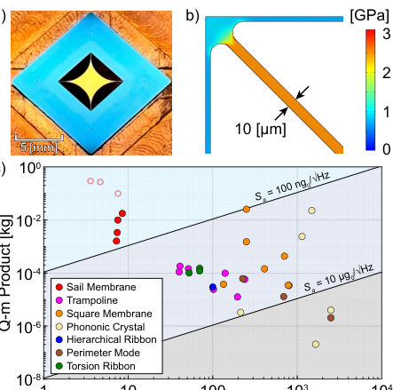
<figcaption class="paper-figure-caption"><b>Fig 1.</b> FIG. 1. (a) Photo of optimized circular-fillet sail membrane with 2.5×2.5 mm2 pad and 10-µm-wide tethers. (b) Simulated von Mises stress near the tether clamps. (c) Compilation of Q × m versus fre- quency for trampoline [10, 22–24], square [25–29], phononic crystal [8, 9, 30–32], hierarchical [33], perimeter mode [34], and torsion rib- bon [35, 36] type Si3N4 membranes. Open and solid red circles are simulated and characterized sail membranes described in Figs. 2-3.</figcaption>
</figure>
<figure class="paper-figure-card">
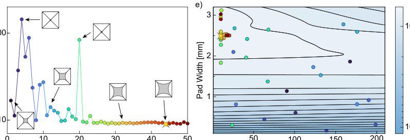
<figcaption class="paper-figure-caption"><b>Fig 2.</b> FIG. 2. Optimizing the Qm/f of a Si3N4 trampoline resonator with fixed tether width. (a) Sail-like trampoline geometries with pad-width W, tether width t, pad fillet radius R, and clamp fillet radius r. Top: square-fillet sail (W independent of R). Bottom: circular-fillet sail (W = R). (b-c) Sweep of W over optimized fillets (yellow markers) with t = 10 µm. Plots show quality factor Q, frequency f, maximum von Mises stress, effective mass m, and Qm/f versus W. (d-e) Bayesian optimization algorithm convergence (d) and design objective landscape (e) for the bottom device in (a). Colored points in (d) correspond to the same points in (e).</figcaption>
</figure>
<figure class="paper-figure-card">
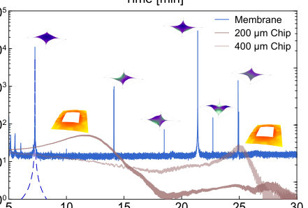
<figcaption class="paper-figure-caption"><b>Fig 3.</b> FIG. 3. Device characterization. (a) Energy ringdown of three sail membranes with the geometry shown in Fig. 1a. Exponential fits yield quality factors as high as Q = 10 × 106. (b) Free-running vi- bration spectra (blue) showing the 7 kHz fundamental membrane mode. Overlaid is the driven response of the 200-µm-thick device chip (brown) and a similar 400-µm-thick chip (light brown) taken with a scanning vibrometer at atmospheric pressure, showing broad resonances at 12 and 25 kHz, respectively. Insets: simulated mem- brane modeshapes and measured chip modeshapes.</figcaption>
</figure>
<figure class="paper-figure-card">
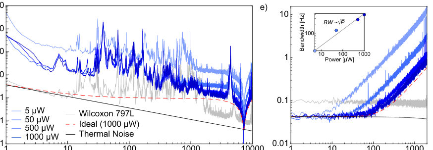
<figcaption class="paper-figure-caption"><b>Fig 4.</b> FIG. 4. Dual membrane accelerometry with an optimized circular-fillet sail membrane as a test mass and a ribbon membrane as a reference surface. (a) Image of sail-on-ribbon device released from a 200-µm-thick Si substrate. The top membrane has the sail geometry shown in Fig. 1a. The bottom membrane is a 200-µm-wide ribbon [35]. (b) Transmission versus incident wavelength of double-membrane cavity with finesse ∼2. The red point indicates the maximum fringe slope and operating wavelength. (c-e) Free-running displacement (c) and acceleration (d,e) spectra measured with power ¯P = {5,50,500,1000} µW. Insets show scaling of noise floor and thermal noise bandwidth versus ¯P.</figcaption>
</figure>
</div>

<p><strong>Summary.</strong> This paper details the design and characterization of novel 'sail-like' $  ext{Si}_3   ext{N}_4$ membranes for use in ultra-sensitive optomechanical accelerometers. By employing Bayesian optimization, the authors engineered resonators that significantly boost the quality factor times mass product while lowering the resonance frequency. The resulting monolithic device demonstrates sensitivity capable of resolving microgravity accelerations, advancing fundamental physics sensing capabilities.</p>
<p><strong>Why it may be interesting.</strong> This work is highly relevant as it pushes the boundaries of mechanical sensing by combining advanced materials science ($    ext{Si}_3   ext{N}_4$), optimization theory (Bayesian methods), and quantum/optomechanical measurement techniques to reach fundamental force detection limits.</p>
<details>
<summary>Detailed structure</summary>
<p><strong>Main problem.</strong> The primary goal is developing highly sensitive optomechanical accelerometers by engineering strained membrane resonators to achieve a superior combination of low resonance frequency and high Q-mass product.</p>
<p><strong>Main result.</strong> The authors designed 'sail-like' $ ext{Si}_3   ext{N}_4$ membranes that significantly increase the $Q 	imes m$ product while lowering the fundamental frequency, achieving sensitivities sufficient to resolve microgravity accelerations.</p>
<p><strong>Method.</strong> The study combines theoretical modeling (deriving noise equations based on geometry and stress) with computational optimization using Bayesian methods to guide the design of optimal membrane geometries.</p>
<p><strong>Model / system.</strong> The physical system is a strained $ ext{Si}_3   ext{N}_4$ membrane resonator, optimized into a sail-like shape. The final device integrates this sail onto a nanoribbon acting as an inertial reference plane for monolithic cavity optomechanical sensing.</p>
<p><strong>Key observables.</strong> Thermal acceleration noise ($S_{	ext{th}}^a$), resonance frequency ($f$), Quality factor ($Q$), and displacement/acceleration imprecision ($    ext{S}<em ext_imp="ext{imp">{    ext{imp}x},     ext{S}</em>$).}a</p>
<p><strong>Important parameters / regimes.</strong> Room temperature thermal noise of $40\;	ext{n}g_0/\sqrt{	ext{Hz}}$; achieving $\mu	ext{g}_0/\sqrt{	ext{Hz}}$ resolution over a 4 kHz bandwidth.</p>
<p><strong>Assumptions / limitations.</strong> The analysis relies on modeling the mechanical response using continuum mechanics equations and assumes that thermal noise is the limiting factor, although discrepancies with measured Q-factors were noted.</p>
<p><strong>Figures summary.</strong> Figures compare $Q 	imes m$ vs frequency for different membrane types, detail the Bayesian optimization process used to find optimal parameters, and show experimental characterization of resonance frequencies and quality factors.</p>
<p><strong>Paper structure.</strong> The paper progresses from identifying the need for improved resonator design (low $f$, high $Qm$) to applying Bayesian optimization on sail geometries. It then presents measurements on optimized single sails and finally demonstrates a monolithic double-membrane setup for acceleration sensing.</p>
</details>
<details>
<summary>Abstract</summary>
<p>Strained membrane resonators have emerged as a promising platform for optomechanical accelerometry; however, the desired combination of low frequency and high $Q$-mass product requires a rethinking of their dissipation dilution engineering. Applying Bayesian optimization to a Si$_3$N$_4$ membrane, we discover a class of sail-like trampoline resonators in which the frequency is decreased by an order of magnitude while preserving the $Q$-mass product. We demonstrate centimeter-scale sails with kHz frequencies, $Q\sim10^7$ and $Q\times\text{mass}\sim$ 10 g. Vertically integrating a 7 kHz device with a nanoribbon, we realize a monolithic cavity optomechanical accelerometer with a room temperature thermal noise of $40\;\text{n}g_0/\sqrt{\text{Hz}}$, sufficient to resolve $μg_0/\sqrt{\text{Hz}}$ ambient vibration over a bandwidth of 4 kHz with a displacement imprecision of $10^{-14}\;\text{m}/\sqrt{\text{Hz}}$. Cryogenic arrays of sail membranes may be attractive for new physics searches and distributed quantum sensing experiments.</p>
</details>
<p><sub><a href="#top">↑ back to top</a></sub></p>

<p><a id="paper-2607.13464"></a></p>
<h3 id="security-evaluation-of-quantum-distance-bounding-protocols-via-semidefinite-programming"><a href="http://arxiv.org/abs/2607.13464v1">Security evaluation of quantum distance-bounding protocols via semidefinite programming</a></h3>
<p><strong>Authors:</strong> Kevin Bogner, Aysajan Abidin, Dave Singelee, Bart Preneel<br>
<strong>Type:</strong> theory · <strong>Category:</strong> quantum information and computing · <strong>PDF:</strong> <a href="https://arxiv.org/pdf/2607.13464v1">https://arxiv.org/pdf/2607.13464v1</a><br>
<strong>Analysis basis:</strong> full PDF text, analyzed in chunks
<strong>Topic relevance:</strong> <code>entanglement &amp; information structure</code> <strong>1/5</strong> · <code>quantum measurements</code> <strong>1/5</strong></p>
<div class="figure-strip-hint">↔ Scroll figures horizontally</div>
<div class="paper-figures-scroll">
<figure class="paper-figure-card">
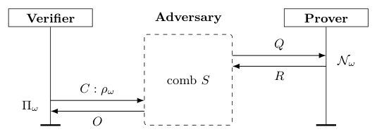
<figcaption class="paper-figure-caption"><b>Fig 1.</b> Figure 1: Reduced mafia-fraud SDP game. The adversary’s comb S first interacts with the prover via the pre-ask channel Nω, then answers the verifier’s challenge ρω. The branch-dependent triple (Nω, ρω, Πω), with Πω the verifier’s accept operator, combines into a single tester operator Wω that captures everything outside the adversary’s control on branch ω. The acceptance probability is then Tr(WωS), a linear function of the comb S; this linearity is what makes the optimization an SDP.</figcaption>
</figure>
<figure class="paper-figure-card">
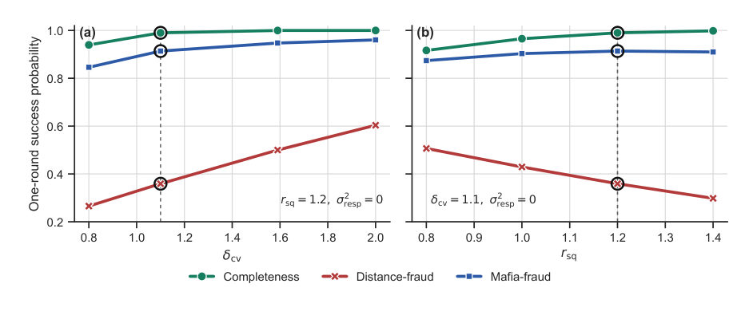
<figcaption class="paper-figure-caption"><b>Fig 2.</b> Figure 2: CV-QDB calibration sweeps with zero added response noise σ2 resp = 0. Panel (a) varies the threshold at fixed rsq = 1.2, while panel (b) varies the squeezing at fixed δcv = 1.1. Mafia-fraud values are finite-grid Gaussian estimators recomputed for each parameter point. Black outlines identify the calibrated operating point used in Table 1.</figcaption>
</figure>
<figure class="paper-figure-card">
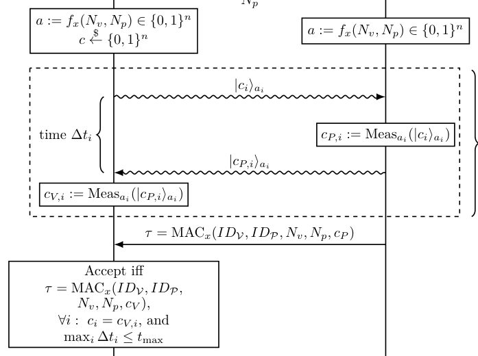
<figcaption class="paper-figure-caption"><b>Fig 3.</b> Figure 3: Overview of the QDB 2017 protocol [AMSP17]. Before the fast rounds, the parties exchange nonces and derive the PRF output a. In each fast round, the verifier prepares |ci⟩ai, and the prover measures it in basis ai and re-prepares the outcome in the same basis. After all rounds, the prover sends τ = MACx(IDV, IDP, Nv, Np, cP ). The verifier accepts only if τ equals the MAC recomputed on cV , all recovered bits match the originals, and every round-trip time ∆ti stays below tmax.</figcaption>
</figure>
<figure class="paper-figure-card">
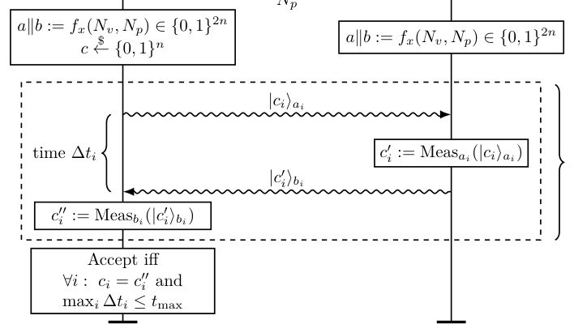
<figcaption class="paper-figure-caption"><b>Fig 4.</b> Figure 4: Overview of the QDB 2019 protocol [Abi19]. Before the fast rounds, the parties exchange nonces and derive the PRF outputs a and b. In each fast round, the verifier prepares |ci⟩ai, and the prover measures it in basis ai and re-prepares the outcome in basis bi. After all rounds, the verifier accepts only if all recovered bits match the originals and every round-trip time ∆ti stays below tmax.</figcaption>
</figure>
<figure class="paper-figure-card">
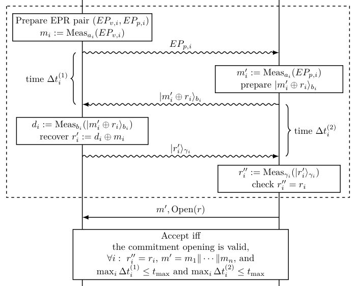
<figcaption class="paper-figure-caption"><b>Fig 5.</b> Figure 5: Overview of the Mutual QDB protocol [AES25]. Before the fast rounds, the parties exchange nonces and derive the PRF outputs a, b, and γ, and the prover commits to a random mask string r. In each fast round, the verifier prepares an EPR pair, measures its own half in basis ai, and sends the prover half EPp,i. The prover measures in the same basis and returns |m′ i ⊕ri⟩bi. The verifier then recovers the mask bit and sends back |r′ i⟩γi. After all rounds, the prover opens the commitment and reveals m′. The verifier accepts only if the commitment opening is valid, the revealed measurement string is consistent with its recorded outcomes, and every first-leg round-trip time stays below...</figcaption>
</figure>
</div>

<p><strong>Summary.</strong> This paper rigorously analyzes the security of Quantum Distance-Bounding protocols by modeling them as one-round fraud games. Using Semidefinite Programming, they compute exact attack success probabilities for discrete variables, demonstrating that Mafia-Fraud resistance can distinguish between different QDB designs. This work advances the theoretical understanding of physical distance verification in quantum communication.</p>
<p><strong>Why it may be interesting.</strong> It provides rigorous mathematical tools (SDP) to analyze security bounds in quantum communication protocols, which is foundational knowledge for quantum cryptography and secure quantum networking.</p>
<details>
<summary>Detailed structure</summary>
<p><strong>Main problem.</strong> The paper evaluates the security of Quantum Distance-Bounding (QDB) protocols by isolating and studying one-round distance-fraud (DF) and mafia-fraud (MF) games.</p>
<p><strong>Main result.</strong> For discrete variables, SDPs allow for exact computation of MF attack values, showing that MF clearly separates studied QDB protocols. The overall resistance depends on whether an attacker can use early information to answer fresh challenges.</p>
<p><strong>Method.</strong> The authors reduce the one-round DF and MF games to convex optimization problems solvable exactly using Semidefinite Programming (SDP) for discrete variables, while employing calibrated Gaussian models for continuous variables.</p>
<p><strong>Model / system.</strong> The study focuses on QDB protocols that use timed quantum communication in a fast phase to bound physical distance. The analysis covers both discrete-variable and continuous-variable constructions.</p>
<p><strong>Key observables.</strong> Success probability of the best single-round attack ($p_\star^{MF}$ or $p_\star^{DF}$) for various QDB protocols.</p>
<p><strong>Important parameters / regimes.</strong> The one-round nature of the fast phase, which simplifies the optimization problem compared to full quantum position verification.</p>
<p><strong>Assumptions / limitations.</strong> The analysis is restricted to a single round; for continuous variables, it uses a finite-grid approximation due to intractable non-convexity.</p>
<p><strong>Figures summary.</strong> Figures illustrate the flow diagrams of specific QDB protocols (e.g., QDB 2017, E91 QDB) detailing verifier/prover actions across multiple rounds.</p>
<p><strong>Paper structure.</strong> The paper first establishes the framework by isolating one-round games; it then details the SDP formulation for discrete variables and Gaussian estimation for continuous variables, presenting results via tables comparing calculated attack values to prior work.</p>
</details>
<details>
<summary>Abstract</summary>
<p>Quantum distance-bounding (QDB) protocols let a verifier check that a prover is both genuine and physically nearby. During a timed fast phase of quantum communication, the verifier measures round-trip times to obtain an upper bound on the prover's distance. For a uniform comparison, we isolate the fast phase and study one-round distance-fraud (DF) and mafia-fraud (MF) games. For discrete-variable QDB, we show that these games reduce to convex optimization problems and can therefore be solved exactly with semidefinite programming; each MF value comes with an explicit attack achieving it and a matching certificate that no attack does better. This contrasts with quantum position verification, where an attack is split between two separated parties, so its optimization is nonconvex and analyses rely on relaxations. In our MF game, the cooperating pair collapses to a single sequential strategy, which keeps the game convex and its exact value computable. Across the discrete-variable protocols we examine, the best one-round DF attack succeeds with the same probability ($1/2$) for every protocol, whereas MF clearly separates the protocols. For continuous-variable QDB, we report estimated attack success probabilities from a calibrated Gaussian attack model. The benchmark covers protocols whose fast phase itself authenticates the prover; designs that follow Brands and Chaum and instead bind the fast phase with a final authenticated message, like the earliest QDB proposal, fall outside it and are treated separately. Of the four protocols studied, two had no previously known one-round attack values, and we report the first ones; for the other two, we find MF attacks with higher success probability than previously reported. Overall, one-round MF resistance depends on whether an attacker can use information revealed early by the prover to answer a fresh challenge from the verifier.</p>
</details>
<p><sub><a href="#top">↑ back to top</a></sub></p>

<p><a id="paper-2607.13774"></a></p>
<h3 id="a-phase-transition-in-the-exactness-of-the-npa-hierarchy-at-the-critical-doubly-tilted-chsh-functional"><a href="http://arxiv.org/abs/2607.13774v1">A phase transition in the exactness of the NPA hierarchy at the critical doubly-tilted CHSH functional</a></h3>
<p><strong>Authors:</strong> Anton Pakhunov<br>
<strong>Type:</strong> theory · <strong>Category:</strong> quantum information and computing · <strong>PDF:</strong> <a href="https://arxiv.org/pdf/2607.13774v1">https://arxiv.org/pdf/2607.13774v1</a><br>
<strong>Analysis basis:</strong> full PDF text, analyzed in chunks
<strong>Topic relevance:</strong> <code>driven-dissipative phase transition</code> <strong>1/5</strong></p>
<div class="figure-strip-hint">↔ Scroll figures horizontally</div>
<div class="paper-figures-scroll">
<figure class="paper-figure-card">
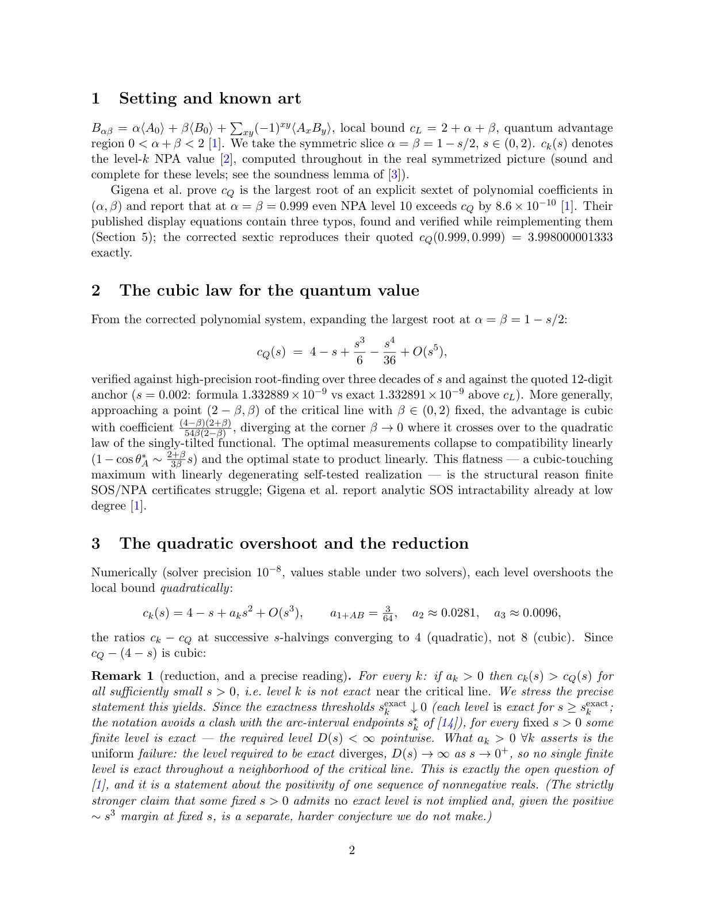
<figcaption class="paper-figure-caption"><b>Fig 1.</b> Low-resolution page preview, page 2</figcaption>
</figure>
<figure class="paper-figure-card">
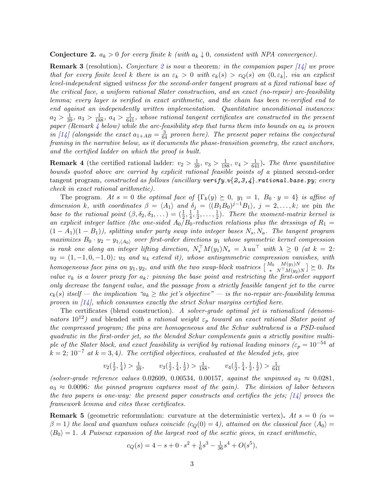
<figcaption class="paper-figure-caption"><b>Fig 2.</b> Low-resolution page preview, page 3</figcaption>
</figure>
<figure class="paper-figure-card">
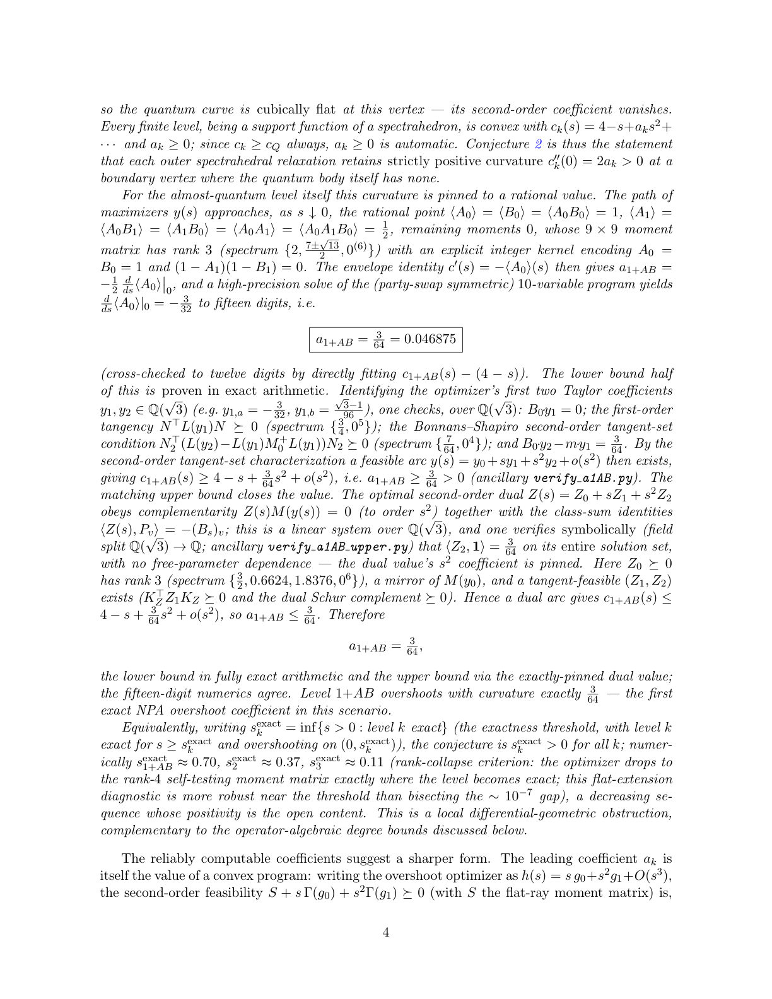
<figcaption class="paper-figure-caption"><b>Fig 3.</b> Low-resolution page preview, page 4</figcaption>
</figure>
<figure class="paper-figure-card">
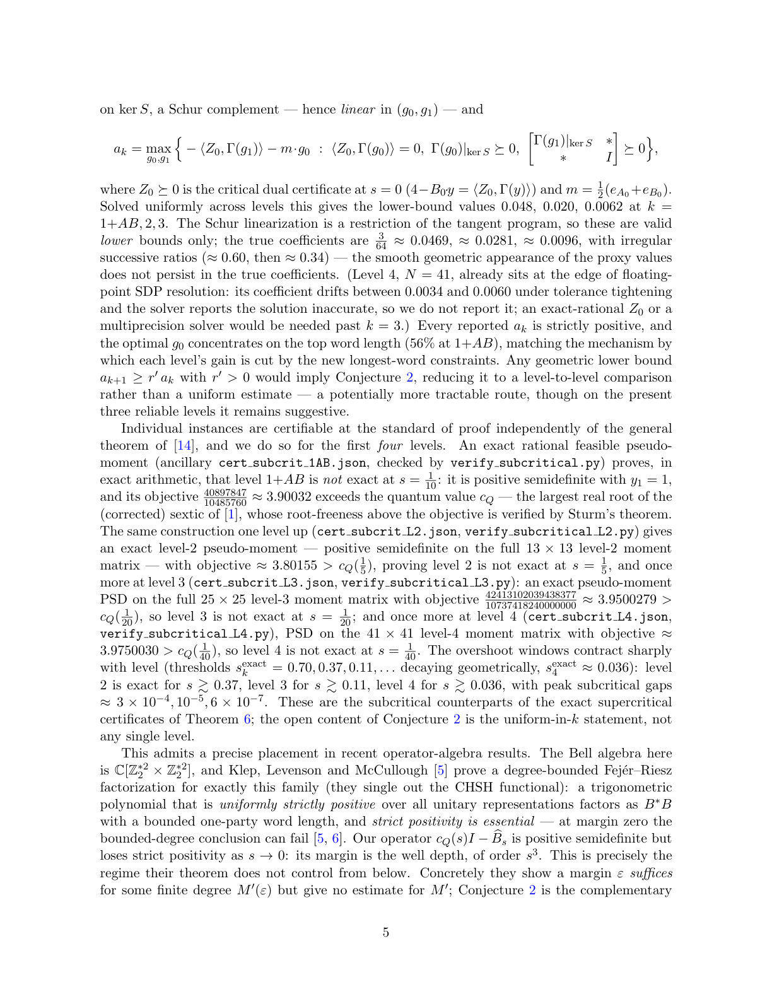
<figcaption class="paper-figure-caption"><b>Fig 4.</b> Low-resolution page preview, page 5</figcaption>
</figure>
<figure class="paper-figure-card">
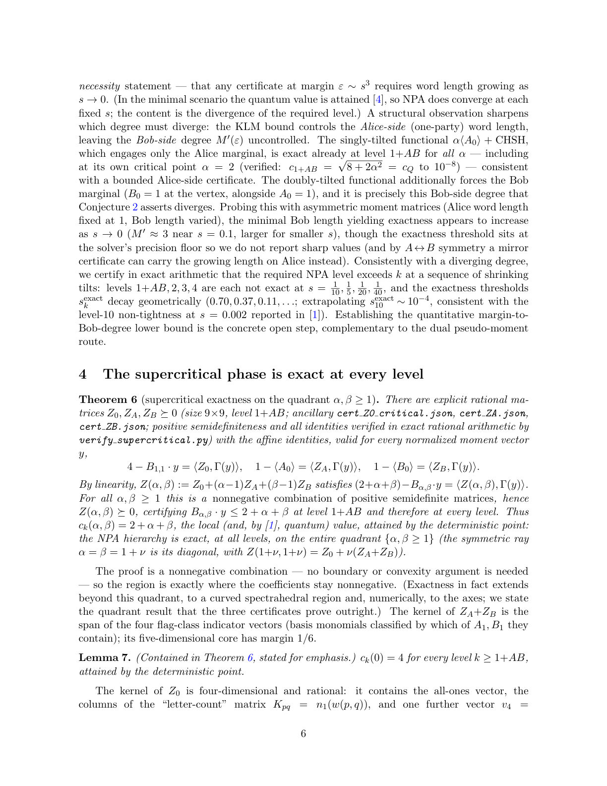
<figcaption class="paper-figure-caption"><b>Fig 5.</b> Low-resolution page preview, page 6</figcaption>
</figure>
</div>

<p><strong>Summary.</strong> This work analyzes the failure points in approximating quantum information measures, specifically the CHSH functional, using the NPA hierarchy. It establishes that the required level of approximation undergoes a sharp phase transition at a critical tilt parameter. The failure mechanism is mathematically characterized as an obstruction arising from noncommutative geometry rather than simple polynomial degree limitations.</p>
<p><strong>Why it may be interesting.</strong> It provides a deep mathematical understanding of when quantum bounds can be rigorously proven using semi-definite programming techniques (moment problems), linking computational limitations to fundamental algebraic structures.</p>
<details>
<summary>Detailed structure</summary>
<p><strong>Main problem.</strong> The paper investigates the phase transition governing the exactness of the NPA hierarchy when approximating the quantum maximum of a doubly-tilted CHSH functional.</p>
<p><strong>Main result.</strong> It proves that the hierarchy is exact in the supercritical regime ($\alpha, eta \ge 1$) but fails to be exactly certifiable near the critical line due to an obstruction rooted in noncommutative geometry.</p>
<p><strong>Method.</strong> The analysis employs advanced mathematical tools including moment matrix theory, rational certificates, second-order perturbation analysis, and geometric conditions like the boundary Hessian.</p>
<p><strong>Model / system.</strong> The model is based on optimizing the doubly-tilted CHSH functional ($B_{\alphaeta}$) for quantum measurements, analyzed via its connection to the NPA hierarchy of moment problems.</p>
<p><strong>Key observables.</strong> The quantum maximum value $c_Q(s)$, the overshooting coefficients $a_k$, and the required level of approximation $k$.</p>
<p><strong>Important parameters / regimes.</strong> The tilt parameter $s = 2 - \alpha - eta$, which controls proximity to the critical line $\alpha + eta = 2$.</p>
<p><strong>Assumptions / limitations.</strong> The analysis relies on comparing noncommutative moment structures against commutative algebraic geometry bounds (Positivstellensatz).</p>
<p><strong>Paper structure.</strong> The paper establishes the asymptotic behavior of $c_Q(s)$, analyzes the quadratic overshoot of NPA levels, proves exactness in the supercritical region via rational certificates, and identifies the phase transition mechanism using geometric conditions.</p>
</details>
<details>
<summary>Abstract</summary>
<p>Gigena et al. [npj Quantum Inf. 11, 82 (2025)] proved the exact quantum maximum of the doubly-tilted CHSH functional $B_{αβ}=α\langle A_0\rangle+β\langle B_0\rangle+\mathrm{CHSH}$ and observed that the NPA level required to reach it grows without evident bound toward the critical line $α+β=2$. We quantify the mechanism on the symmetric slice $s=2-α-β$: (i) the quantum value leaves the local bound cubically, $c_Q=4-s+s^3/6-s^4/36+O(s^5)$; (ii) each NPA level overshoots quadratically, $c_k(s)=4-s+a_k s^2+O(s^3)$, with the almost-quantum coefficient computed exactly, $a_{1+AB}=3/64$; (iii) the divergence of the required exact level is equivalent to positivity of the single sequence $(a_k)$ - proven for every $k$ in the companion paper. We prove the supercritical side completely: for all $α,β\ge 1$ and every level the hierarchy is exact, via three explicit rational certificates realizing an affine identity. The hierarchy's exactness thus undergoes a phase transition at the critical line. On the subcritical side we certify the first four levels in exact arithmetic (rational pseudo-moments beating $c_Q$, confirmed by Sturm's theorem). We identify the exact mechanism: rescaled to the critical corner, the limiting obstruction is the Motzkin polynomial, the classical nonnegative-but-not-sum-of-squares form, so the finite-level failure sits in the restricted-certificate regime. The phase boundary has a precise geometric reading via Nie's finite-convergence theorem and Marshall's boundary Hessian condition: a self-tested optimum is finitely NPA-certifiable whenever its boundary Hessian is nondegenerate (contact order two), which holds for the single tilt and fails exactly at the doubly-tilted cubic touch. Three verified errata in the published polynomial system of Gigena et al. are documented.</p>
</details>
<p><sub><a href="#top">↑ back to top</a></sub></p>

<p><a id="paper-2607.13887"></a></p>
<h3 id="a-reservoir-computing-approach-to-quantum-gate-synthesis"><a href="http://arxiv.org/abs/2607.13887v1">A Reservoir Computing Approach to Quantum Gate Synthesis</a></h3>
<p><strong>Authors:</strong> Francesco Caravelli, Roberto Menta, Antonio Sannia<br>
<strong>Type:</strong> theory · <strong>Category:</strong> quantum information and computing · <strong>PDF:</strong> <a href="https://arxiv.org/pdf/2607.13887v1">https://arxiv.org/pdf/2607.13887v1</a><br>
<strong>Analysis basis:</strong> full PDF text, analyzed in chunks
<strong>Topic relevance:</strong> <code>methods for driven-dissipative</code> <strong>1/5</strong></p>
<div class="figure-strip-hint">↔ Scroll figures horizontally</div>
<div class="paper-figures-scroll">
<figure class="paper-figure-card">
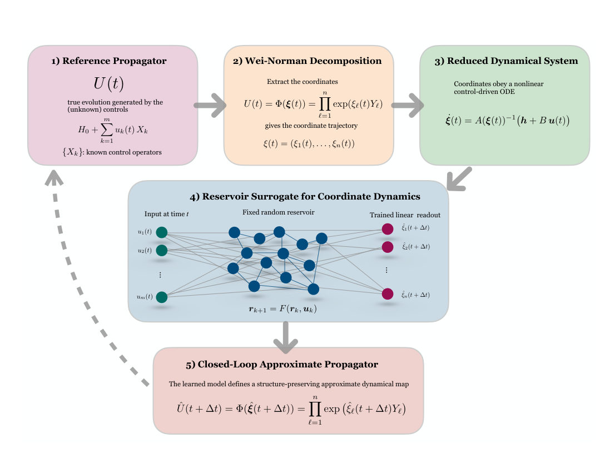
<figcaption class="paper-figure-caption"><b>Fig 1.</b> Fig. 1. Structure-preserving reservoir-computing architecture for controlled quantum dynamics and gate synthesis. (1) Starting from the controlled propagator U(t), generated by a Hamiltonian H(t) = H0 + P k uk(t)Xk, (2) the evolution is expressed in Wei–Norman coordinates, U(t) = Φ(ξ(t)) = Q ℓexp(ξℓ(t)Yℓ). (3) This yields a reduced nonlinear control system for the coordinates, ˙ξ(t) = A(ξ(t))−1(h + B u(t)), which is approximated by a reservoir surrogate driven by the control fields uk(t). (4,5) The trained linear readout predicts the coordinate evolution ˆξ(t), and the propagator is reconstructed by the Wei–Norman product ˆU(t) = Φ( ˆξ(t)). Because reconstruction is performed directly on...</figcaption>
</figure>
<figure class="paper-figure-card">
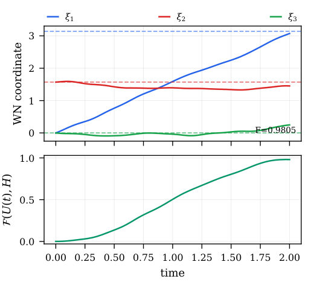
<figcaption class="paper-figure-caption"><b>Fig 2.</b> Fig. 2. Representative single-pass inverse-ESN synthesis of the Hadamard gate. Top: the Wei–Norman coordinate trajectory approaches the target co- ordinates but does not terminate exactly on them. Bottom: the gate fidelity along the trajectory, confirming that the gate is synthesized well—though not perfectly—before any gradient refinement.</figcaption>
</figure>
<figure class="paper-figure-card">
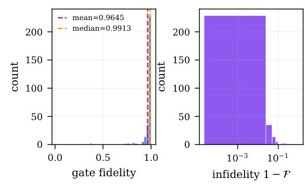
<figcaption class="paper-figure-caption"><b>Fig 3.</b> Fig. 3. Held-out fidelity distribution for the inverse ESN on 300 unseen gates. The sharp peak near unit fidelity gives the high median (0.994), while the long low-fidelity tail accounts for the lower mean (0.943); the principal challenge is the elimination of rare but substantial failures.</figcaption>
</figure>
<figure class="paper-figure-card">
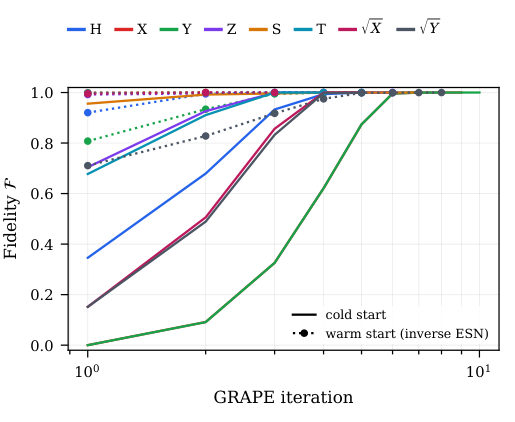
<figcaption class="paper-figure-caption"><b>Fig 4.</b> Fig. 4. Warm- versus cold-start convergence of the accelerated GRAPE kernel on the standard eight-gate suite: gate fidelity versus iteration (logarithmic axis), with solid lines for the cold start and dotted lines with markers for the warm start supplied by the inverse ESN; every run stops at F &gt; 0.99999. Both starts converge within ten iterations at one qubit; the warm start enters at its single-pass fidelity (Table II) and lowers the median iteration count from 6.5 to 5. The corresponding comparison for plain gradient ascent (last two columns of Table II) shows cold-start convergence at 700–1800 iterations, roughly halved by the warm start on seven of the eight gates.</figcaption>
</figure>
<figure class="paper-figure-card">
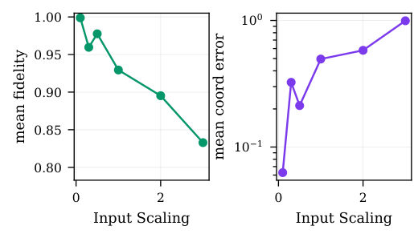
<figcaption class="paper-figure-caption"><b>Fig 5.</b> Fig. 5. Fidelity and coordinate error versus input scaling σin, the most sensitive hyperparameter.</figcaption>
</figure>
</div>

<p><strong>Summary.</strong> The paper presents Group Reservoir Computing, a novel method for synthesizing quantum gates by translating the complex unitary evolution problem into solving nonlinear ordinary differential equations in Wei–Norman coordinates. By using an Echo State Network trained on these coordinates, it bypasses computationally expensive full-system simulations while mathematically guaranteeing that the resulting gate remains perfectly unitary.</p>
<p><strong>Why it may be interesting.</strong> This work provides a powerful machine learning framework that respects fundamental physical constraints (unitarity via WN decomposition), offering a computationally efficient alternative to standard optimal control methods for quantum hardware implementation.</p>
<details>
<summary>Detailed structure</summary>
<p><strong>Main problem.</strong> The core problem is efficiently synthesizing quantum gates by finding time-dependent control fields that drive a quantum system to a desired unitary transformation.</p>
<p><strong>Main result.</strong> The proposed method achieves high fidelity (mean 0.94) on single-qubit gates and significantly accelerates the convergence of gradient-based optimization techniques by providing an accurate warm start.</p>
<p><strong>Method.</strong> It combines Lie theory (Wei–Norman decomposition) to map the unitary evolution problem onto a set of scalar nonlinear ordinary differential equations, which are then solved using Reservoir Computing (specifically, an Echo State Network).</p>
<p><strong>Model / system.</strong> The system is a controlled quantum evolution governed by a Hamiltonian $H(t) = H_0 + \sum u_k(t) X_k$, aiming to synthesize unitary gates on finite-dimensional hardware platforms.</p>
<p><strong>Key observables.</strong> Gate fidelity ($F$), convergence iteration count, and the coordinate error ($\| \xi - \hat{\xi} \|$).</p>
<p><strong>Important parameters / regimes.</strong> The time interval $[0, T]$, the control class $V$, and the structure of the underlying Lie algebra.</p>
<p><strong>Assumptions / limitations.</strong> Key assumptions include assuming Lipschitz continuity for the dynamics in a compact set K and that the surrogate vector field error is bounded ($\|\mathbf{f} - \hat{\mathbf{f}}\| \le \varepsilon$).</p>
<p><strong>Figures summary.</strong> Figures compare convergence speed (iteration counts) between warm-start, cold-start, and plain gradient ascent methods for standard gates; another figure shows fidelity vs. input scaling.</p>
<p><strong>Paper structure.</strong> The paper first introduces the problem and the WN decomposition to reduce the dynamics to scalar ODEs. It then details using Reservoir Computing (ESN) to learn the control-to-coordinate map, followed by theoretical error bounding and empirical validation showing convergence speed improvements.</p>
</details>
<details>
<summary>Abstract</summary>
<p>Quantum gate synthesis is essential for implementing quantum algorithms on real hardware, yet existing methods are often computationally demanding. Here, we introduce a novel approach based on reservoir computing, which we name Group Reservoir Computing, an efficient machine-learning paradigm for learning temporal dynamics whose training reduces to a single linear regression, to reduce the resources required. The method is grounded in the Wei--Norman decomposition, which provides a compact description of the evolution. We prove that the reconstructed dynamics always remain unitary by construction and derive formal error bounds that establish the theoretical validity of the strategy. On the standard single-qubit gate set the trained network produces a control pulse in a single pass, with mean fidelity 0.94 across the eight benchmark gates; used to warm-start gradient-based optimization, it roughly halves the number of iterations that plain gradient ascent needs to reach a target fidelity, so that the relevant figure of merit is the time to reach that threshold rather than the final accuracy after a fixed budget. Owing to its general formulation, the method applies to any finite-dimensional hardware platform; the route to multiqubit synthesis is discussed in the closing section.</p>
</details>
<p><sub><a href="#top">↑ back to top</a></sub></p>

<p><a id="paper-2607.13923"></a></p>
<h3 id="angular-momentum-splitter-effect-of-math748math-wave-axial-phonons-in-orbital-altermagnets"><a href="http://arxiv.org/abs/2607.13923v1">Angular momentum splitter effect of $d$-wave axial phonons in orbital altermagnets</a></h3>
<p><strong>Authors:</strong> Dimos Chatzichrysafis, Alexander Mook<br>
<strong>Type:</strong> theory · <strong>Category:</strong> strongly correlated electrons · <strong>PDF:</strong> <a href="https://arxiv.org/pdf/2607.13923v1">https://arxiv.org/pdf/2607.13923v1</a><br>
<strong>Analysis basis:</strong> full PDF text, analyzed in chunks
<strong>Topic relevance:</strong> <code>Keldysh / 2PI / non-Gaussian methods</code> <strong>1/5</strong></p>
<div class="figure-strip-hint">↔ Scroll figures horizontally</div>
<div class="paper-figures-scroll">
<figure class="paper-figure-card">
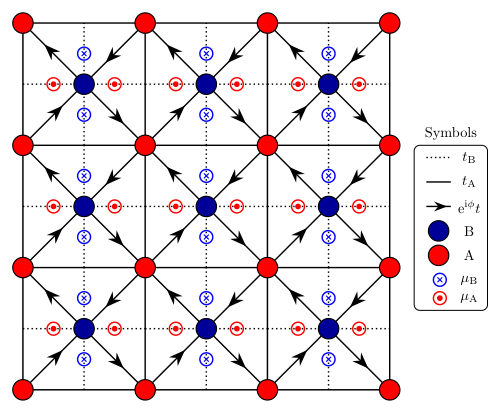
<figcaption class="paper-figure-caption"><b>Fig 1.</b> FIG. 1: Orbital altermagnet on the checkerboard lattice illustrating the tight-binding Hamiltonian in Eq. (1). Nearest-neighbor hopping amplitudes are complex, eiϕt, where the arrows indicate the direction corresponding to a positive phase ϕ. Next-nearest-neighbor hopping amplitudes on the A and B sublattices are denoted by tA and tB, respectively, with tA , tB. The circulating currents can be thought to generate out-of-plane orbital magnetic moments µA and µB, which are guides to the eye and make the d-wave symmetry apparent.</figcaption>
</figure>
<figure class="paper-figure-card">
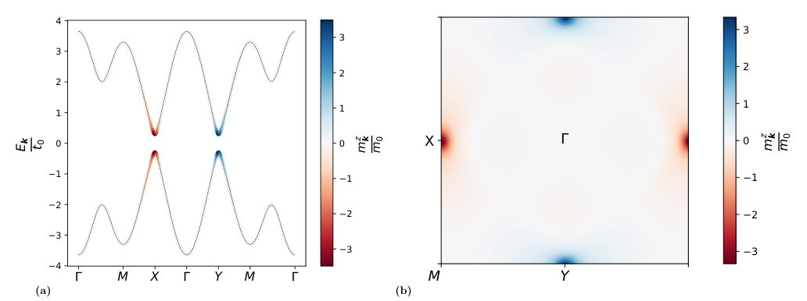
<figcaption class="paper-figure-caption"><b>Fig 2.</b> FIG. 2: (a) Electron spectrum plotted in reciprocal space along high-symmetry directions. Dashed lines indicate the electron energies in Eq. (6) and color indicates the orbital magnetic moment mz k. (b) Momentum-resolved orbital magnetic moment mz k, with m0 = et0a2 0/(2cℏ) being the unit magnetic moment.</figcaption>
</figure>
<figure class="paper-figure-card">
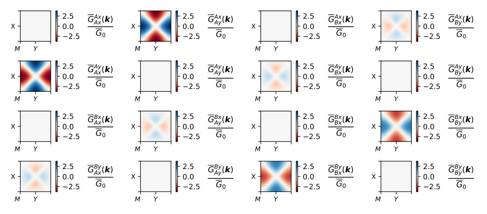
<figcaption class="paper-figure-caption"><b>Fig 3.</b> FIG. 3: Real part of all elements of the MBC for checkerboard-lattice model in Eq. (1). Each element is plotted as a function of k within the first Brillouin zone, with G0 = 10−2g0 = 10−2ℏ/  M0a2 0  = 109Hz, where g0 = ℏ/  M0a2 0  = 1011Hz is the baseline scale of our MBC. The ordering of the elements corresponds to the ordering of the MBC matrix in Eq. (24).</figcaption>
</figure>
<figure class="paper-figure-card">
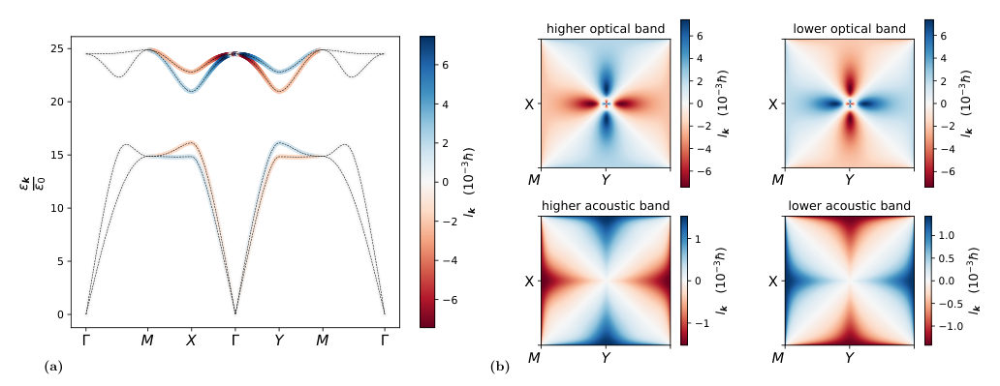
<figcaption class="paper-figure-caption"><b>Fig 4.</b> FIG. 4: (a) Phonon band structure of the in-plane phonons on the checkerboard lattice, including the effects of the MBC in the phonon Hamiltonian, with ε0 = ℏω0 = 1 meV being the characteristic phonon energy scale. Dashed lines indicate the harmonic phonon energies and color shows the out-of-plane phonon angular momentum lkσ. (b) d-wave texture of lkσ for all four phonon bands.</figcaption>
</figure>
<figure class="paper-figure-card">
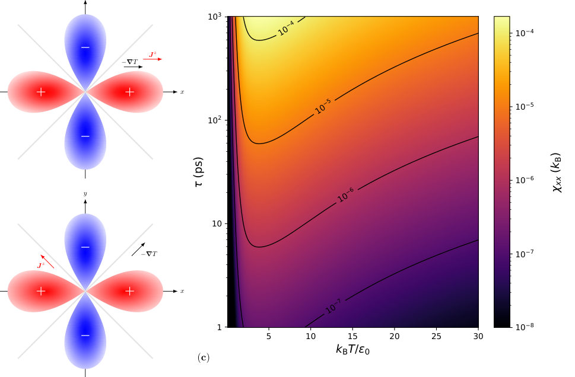
<figcaption class="paper-figure-caption"><b>Fig 5.</b> FIG. 5: (a,b) Schematic of the angular-momentum splitter effect, with the red and blue lobes representing the d-wave phonon angular momentum texture in reciprocal space. The red color denotes the positive part of the texture and the blue the negative one. The nodal lines of the texture along the diagonals are colored in gray. We distinguish the cases where −∇T is applied (a) along the x-axis, resulting in a longitudinal angular momentum current response, and (b) along the nodal lines of the texture, thus generating a transverse angular momentum current response. (c) Response tensor element χxx (angular momentum conductivity) as a function of temperature T and constant phonon relaxation time...</figcaption>
</figure>
</div>

<p><strong>Summary.</strong> The paper theoretically proves that axial phonons can acquire a d-wave angular momentum texture in orbital altermagnets using only electronic structure effects (via the molecular Berry curvature). This bypasses the need for spin-orbit coupling, opening new avenues to engineer exotic phonon functionalities like angular-momentum Seebeck effects.</p>
<p><strong>Why it may be interesting.</strong> This work connects orbital magnetism (a strongly correlated electron phenomenon) directly to lattice dynamics via Berry curvature, providing a mechanism for engineering quantized angular momentum transport in materials without needing relativistic SOC terms.</p>
<details>
<summary>Detailed structure</summary>
<p><strong>Main problem.</strong> To theoretically demonstrate that axial phonons can host a d-wave angular momentum texture in orbital altermagnets without relying on spin-orbit coupling.</p>
<p><strong>Main result.</strong> The authors show the electronic state's d-wave orbital magnetic moment texture is transferred to the lattice vibrations (phonons) via the molecular Berry curvature, enabling new platforms for engineering axial phonons.</p>
<p><strong>Method.</strong> The study employs the Born-Oppenheimer approximation and analyzes phonon dynamics by diagonalizing an effective Hamiltonian derived from electron-phonon coupling mediated by the Molecular Berry Curvature (MBC).</p>
<p><strong>Model / system.</strong> The system is an orbital altermagnet on a checkerboard lattice, modeled with a minimal tight-binding Hamiltonian exhibiting d-wave loop-current order that breaks time-reversal symmetry.</p>
<p><strong>Key observables.</strong> Axial phonons carrying finite angular momentum; the $d$-wave orbital magnetic moment texture ($m_{z,k}$); and measurable effects like angular-momentum Seebeck and splitter effects.</p>
<p><strong>Important parameters / regimes.</strong> The analysis is restricted to the insulating regime (V=0) and relies on the presence of d-wave symmetry breaking in the electronic state.</p>
<p><strong>Assumptions / limitations.</strong> Key approximations include using the Born-Oppenheimer approximation, assuming a minimal tight-binding model, and utilizing Slater determinant forms for basis states.</p>
<p><strong>Figures summary.</strong> Figures illustrate the orbital almagnet structure on the lattice, the momentum-resolved orbital magnetic moment texture ($m_{z,k}$), and the calculated Molecular Berry Curvature ($ ext{G}_{\alpha\kappaeta}(\mathbf{k})$) in momentum space.</p>
<p><strong>Paper structure.</strong> The paper progresses from establishing the electronic model and its d-wave texture to calculating the MBC using the BO approximation. It then applies this MBC to derive the phonon Hamiltonian, culminating in the diagonalization of the effective Hamiltonian to predict measurable phonon splitting effects.</p>
</details>
<details>
<summary>Abstract</summary>
<p>We theoretically demonstrate that axial phonons, lattice vibration quanta carrying finite angular momentum, can host a $d$-wave angular momentum texture in orbital altermagnets in the absence of spin-orbit coupling. We consider a minimal electronic tight-binding model with $d$-wave loop-current order that breaks time-reversal symmetry. Within the Born-Oppenheimer approximation, we incorporate electron-phonon coupling via the molecular Berry curvature and show that the underlying $d$-wave orbital magnetic moment texture of the electronic state is transferred to the phonons without requiring the relativistic spin-orbit coupling. Our results expand the range of platforms available for engineering axial phonons and point to functionality unique to $d$-wave textures, including angular-momentum Seebeck and splitter effects, corresponding to longitudinal and transverse angular-momentum currents driven by a temperature gradient.</p>
</details>
<p><sub><a href="#top">↑ back to top</a></sub></p>

<p><a id="paper-2607.13762"></a></p>
<h3 id="no-finite-level-of-the-npa-hierarchy-is-exact-for-the-doubly-tilted-chsh-functional-near-the-critical-tilt"><a href="http://arxiv.org/abs/2607.13762v1">No finite level of the NPA hierarchy is exact for the doubly-tilted CHSH functional near the critical tilt</a></h3>
<p><strong>Authors:</strong> Anton Pakhunov<br>
<strong>Type:</strong> theory · <strong>Category:</strong> quantum information and computing · <strong>PDF:</strong> <a href="https://arxiv.org/pdf/2607.13762v1">https://arxiv.org/pdf/2607.13762v1</a><br>
<strong>Analysis basis:</strong> full PDF text, analyzed in chunks
<strong>Topic relevance:</strong> <code>entanglement &amp; information structure</code> <strong>1/5</strong></p>
<div class="figure-strip-hint">↔ Scroll figures horizontally</div>
<div class="paper-figures-scroll">
<figure class="paper-figure-card">
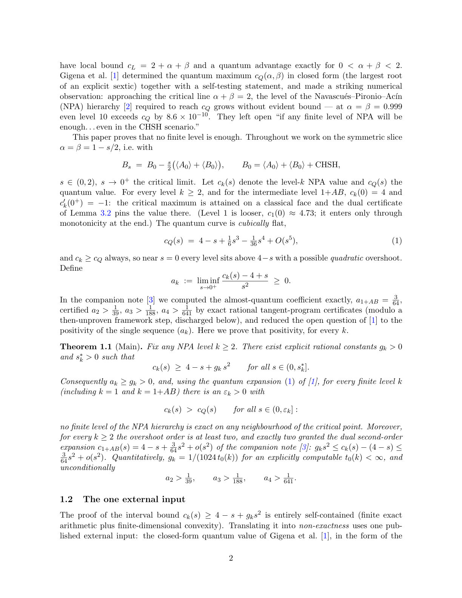
<figcaption class="paper-figure-caption"><b>Fig 1.</b> Low-resolution page preview, page 2</figcaption>
</figure>
<figure class="paper-figure-card">
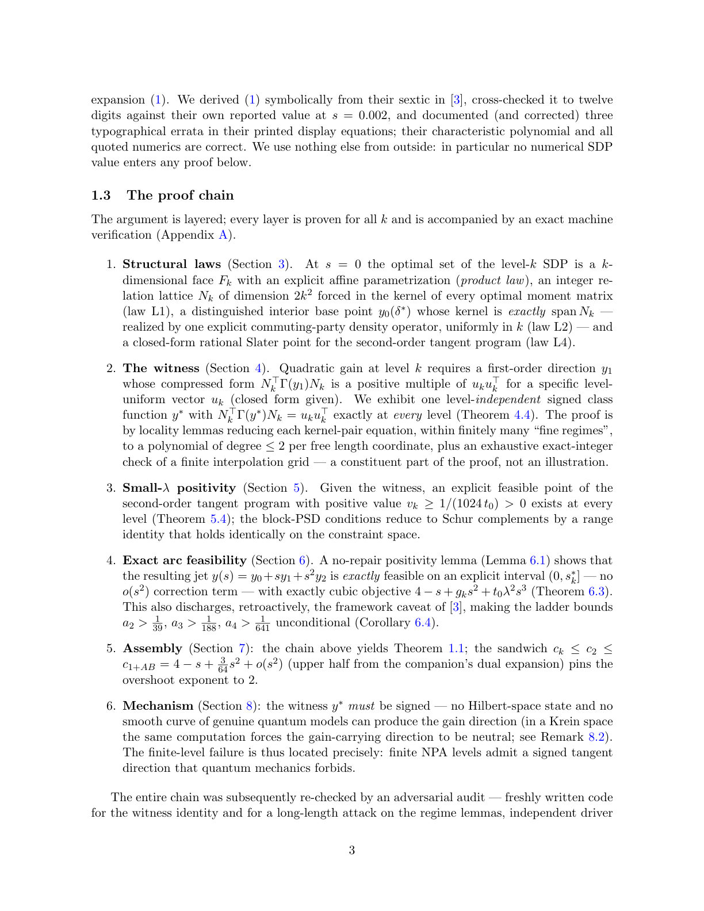
<figcaption class="paper-figure-caption"><b>Fig 2.</b> Low-resolution page preview, page 3</figcaption>
</figure>
<figure class="paper-figure-card">
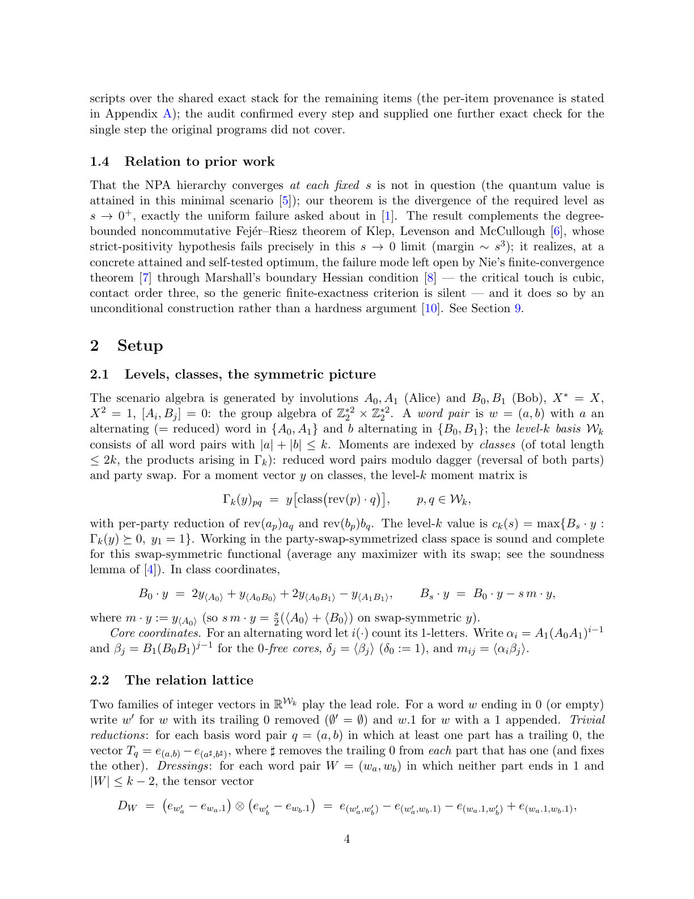
<figcaption class="paper-figure-caption"><b>Fig 3.</b> Low-resolution page preview, page 4</figcaption>
</figure>
<figure class="paper-figure-card">
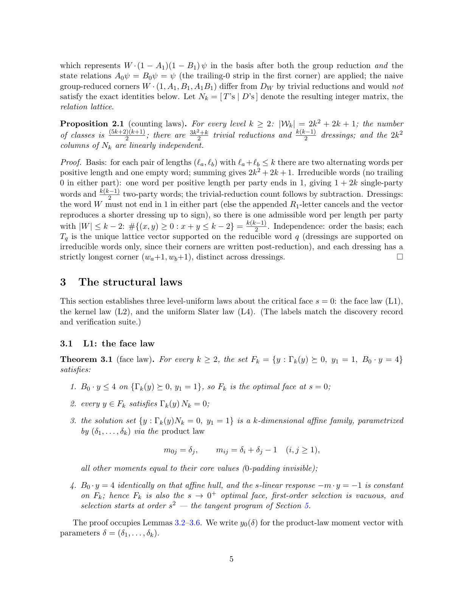
<figcaption class="paper-figure-caption"><b>Fig 4.</b> Low-resolution page preview, page 5</figcaption>
</figure>
<figure class="paper-figure-card">
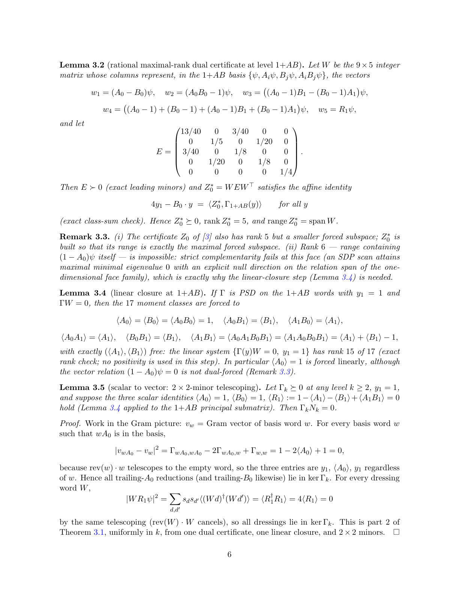
<figcaption class="paper-figure-caption"><b>Fig 5.</b> Low-resolution page preview, page 6</figcaption>
</figure>
</div>

<p><strong>Summary.</strong> The paper rigorously proves that for a specific Bell inequality functional near its critical point, no finite level of the NPA hierarchy can exactly capture the true quantum maximum value. This is shown by constructing explicit mathematical counterexamples demonstrating an unavoidable overshoot at every finite relaxation level. It establishes fundamental limitations on using polynomial moment methods to characterize quantum correlations.</p>
<p><strong>Why it may be interesting.</strong> This work provides rigorous mathematical proof regarding the limitations of polynomial relaxations (like those used in semidefinite programming bounds) when applied to fundamental quantum correlations, suggesting inherent gaps between classical/algebraic bounds and true quantum mechanics.</p>
<details>
<summary>Detailed structure</summary>
<p><strong>Main problem.</strong> To determine if any finite level of the Navascués–Pironio–Acín (NPA) hierarchy is exact for the doubly-tilted CHSH functional near a critical tilt.</p>
<p><strong>Main result.</strong> The authors prove that no finite NPA level is exact in any neighborhood of the critical point because the quantum value leaves the local bound only cubically, causing all finite levels to strictly overshoot.</p>
<p><strong>Method.</strong> The proof uses a primal construction involving analyzing moment curves and structural laws derived from relation lattices. It combines advanced algebraic techniques with computer-assisted verification using exact rational arithmetic.</p>
<p><strong>Model / system.</strong> The analysis concerns the Bell scenario quantified by doubly-tilted CHSH functionals, which are related to quantum correlations measured via moments of Pauli operators in a specific limit (the critical tilt).</p>
<p><strong>Key observables.</strong> The level-$k$ NPA value ($c_k(s)$) compared against the true quantum maximum value ($c_Q(s)$), and the coefficients $a_k$ characterizing the deviation.</p>
<p><strong>Important parameters / regimes.</strong> The small parameter $s$, which measures the distance from the critical tilt ($\alpha + eta = 2$), and the NPA level index $k$.</p>
<p><strong>Assumptions / limitations.</strong> The proof relies on one external input: the published quantum value of Gigena et al., which was cross-checked by the authors.</p>
<p><strong>Paper structure.</strong> The paper develops structural laws (L1, L2, L4) governing the NPA hierarchy using relation lattices and moment tensors. It then uses these structures to construct a feasible moment curve that demonstrates an unavoidable overshoot of the quantum bound near criticality.</p>
</details>
<details>
<summary>Abstract</summary>
<p>Gigena, Panwar, Scala, Araujo, Farkas and Chaturvedi [npj Quantum Inf. 11, 82 (2025)] determined the quantum maximum of the doubly-tilted CHSH functionals, observed that the Navascues-Pironio-Acin level needed for exactness grows without evident bound toward the critical tilt, and asked whether any finite level suffices. We answer this in the negative. For the symmetric critical family $B_s=(1-s/2)(\langle A_0\rangle+\langle B_0\rangle)+\mathrm{CHSH}$ we prove: for every NPA level $k\ge 2$ there are an explicit rational $g_k>0$ and an $s^*_k>0$ with $c_k(s)\ge 4-s+g_k s^2$ on $(0,s^*_k]$; since the quantum value leaves the local bound only cubically, every finite level strictly overshoots on an interval: no finite level is exact on any neighbourhood of the critical point. Unconditionally $a_2>1/39$, $a_3>1/188$, $a_4>1/641$. The proof is a primal construction: an exactly feasible moment curve at each level, built from level-uniform structural laws and one level-independent signed witness -- a closed-form class function $y^*$ with $N_k^TΓ(y^*)N_k=u_k u_k^T$ at every level. The mechanism forces the sign: for $k\ge 3$ no quantum state and no smooth curve of quantum models can realize the gain direction, so the overshoot lives strictly in the non-quantum part of the NPA tangent cone. The proof is computer-assisted in the strict sense: finite exact-integer verifications with proven degree bounds are constituent parts of the argument; the chain has been re-verified against independent implementations, including a symbolic per-regime proof of the witness identity and a clean-room implementation written from the paper text alone. The one external input is the published quantum value of Gigena et al., cross-checked to twelve digits.</p>
</details>
<p><sub><a href="#top">↑ back to top</a></sub></p>

<p><a id="paper-2607.13847"></a></p>
<h3 id="quantum-topological-data-encoding"><a href="http://arxiv.org/abs/2607.13847v1">Quantum Topological Data Encoding</a></h3>
<p><strong>Authors:</strong> Adam Wesołowski, Dimitrios Thanos, Daniel Leykam, Lirandë Pira<br>
<strong>Type:</strong> theory · <strong>Category:</strong> quantum information and computing · <strong>PDF:</strong> <a href="https://arxiv.org/pdf/2607.13847v1">https://arxiv.org/pdf/2607.13847v1</a><br>
<strong>Analysis basis:</strong> full PDF text, analyzed in chunks
<strong>Topic relevance:</strong> <code>entanglement &amp; information structure</code> <strong>1/5</strong></p>
<div class="figure-strip-hint">↔ Scroll figures horizontally</div>
<div class="paper-figures-scroll">
<figure class="paper-figure-card">
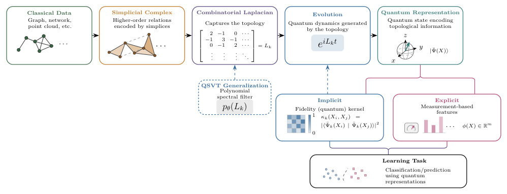
<figcaption class="paper-figure-caption"><b>Fig 1.</b> FIG. 1: Overview of the Quantum Topological Data Encoding (QTDE) framework. Classical relational data are lifted to a simplicial complex, encoded by the combinatorial Laplacian Lk, and mapped to quantum representations through topology-driven evolution or spectral filtering implemented via quantum singular value transformation (QSVT). The resulting quantum representation can be accessed either implicitly through a fidelity-based quantum kernel or explicitly through features derived through measurement. Both representations provide topological feature maps that can be used in downstream machine learning tasks such as classification and prediction.</figcaption>
</figure>
<figure class="paper-figure-card">
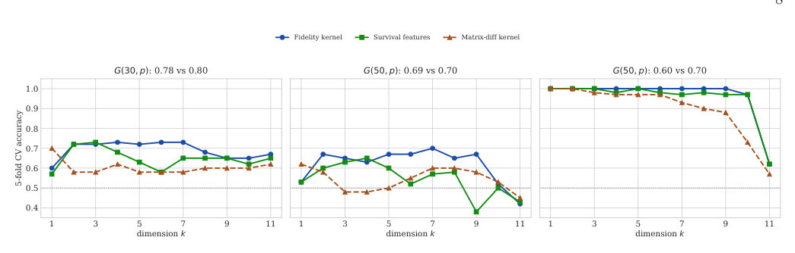
<figcaption class="paper-figure-caption"><b>Fig 2.</b> FIG. 2: Classification accuracy based on QTDE (using a support vector machine) as a function of simplicial dimension k for binary classification tasks on clique complexes based on Erdős–Rényi random graph ensembles. The three panels correspond to increasingly challenging discrimination tasks between topological-space classes generated based on random graphs with different edge probabilities. Results are shown for the proposed fidelity kernel representation (blue) and survival features (green), together with a classical baseline based on direct comparison of combinatorial Laplacians through a matrix-difference kernel (brown). Classification performance is reported as the mean 5-fold...</figcaption>
</figure>
<figure class="paper-figure-card">
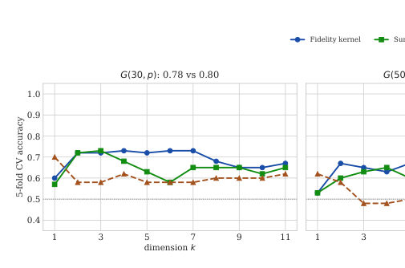
<figcaption class="paper-figure-caption"><b>Fig 3.</b> Figure 4 tests whether replacing the exponential evo- lution e−iLkt with a trainable polynomial filter pθ(Lk) (see Section III C) yields a more discriminative representa- tion than the fixed Hamiltonian encoding, on the harder G(40, p) benchmark (p0 = 0.58 vs. p1 = 0.60, 25 graphs per class). For each simplicial dimension k = 1, . . . , 8 we scan a fixed library of ten polynomials p(x) (Table in panel (b)/(c) row labels), implement each as a QSVT phase sequence acting on Lk, and evaluate both read- outs (the fidelity kernel κk and the survival-feature vector ϕ(X)) against the original exponential encoding and the matrix-difference baseline KF k . a. Per-dimension comparison of best filters...</figcaption>
</figure>
<figure class="paper-figure-card">
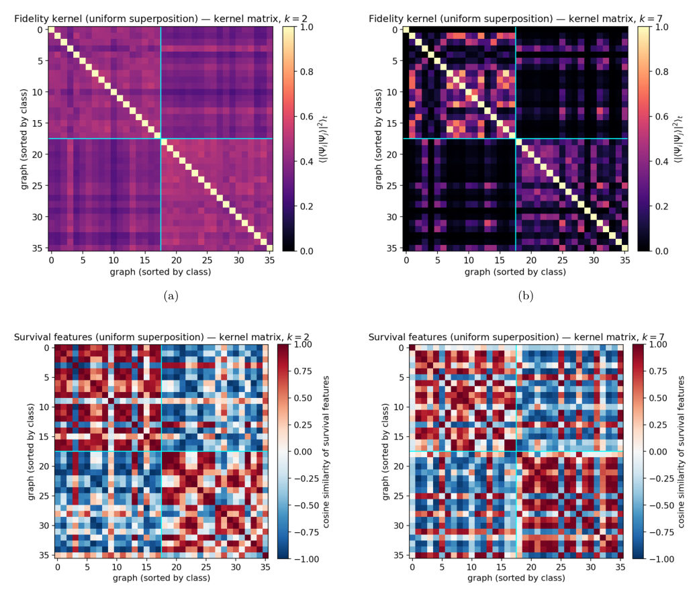
<figcaption class="paper-figure-caption"><b>Fig 4.</b> FIG. 3: Comparison of implicit and explicit representations produced by QTDE. (a) and (b) show the fidelity kernel matrices computed from the evolved quantum states for simplicial dimensions k = 2 and k = 7, respectively. (c) and (d) show the corresponding similarity matrices obtained from the explicit survival-feature representations using cosine similarity. Graphs are ordered by class, cyan lines indicate the class boundary separating the two graph ensembles.</figcaption>
</figure>
<figure class="paper-figure-card">
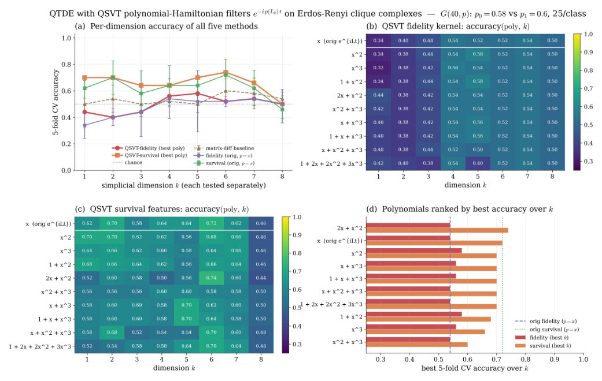
<figcaption class="paper-figure-caption"><b>Fig 5.</b> FIG. 4: QSVT with degree-three polynomial spectral filters pθ(Lk) on Erdős–Rényi clique complexes (G(40, p): p0 = 0.58 vs. p1 = 0.60, 25 graphs per class). (a) Per-dimension accuracy for the best-performing filter at each k, for the fidelity kernel and survival features, against the original exponential encoding and the matrix-difference baseline. Figures (b, c) accuracy as a function of filter and dimension k for the fidelity kernel and survival features, respectively. (d) Filters ranked by best accuracy attained over all k. Error bars in (a) denote the standard deviation over five-fold cross-validation.</figcaption>
</figure>
</div>

<p><strong>Summary.</strong> The paper introduces Quantum Topological Data Encoding (QTDE), a general framework that encodes the topological structure of datasets into quantum states. It uses the combinatorial Laplacian as the generator for unitary quantum evolution, creating representations superior to classical methods. This advances quantum machine learning by providing a robust way to process high-dimensional data carrying complex geometric information.</p>
<p><strong>Why it may be interesting.</strong> This work bridges algebraic topology with quantum computation by providing a concrete mechanism to embed complex relational data structures into the quantum domain using spectral properties of graph Laplacians.</p>
<details>
<summary>Detailed structure</summary>
<p><strong>Main problem.</strong> The core problem is developing a method to encode rich geometric and topological structure from classical datasets into quantum states for machine learning applications.</p>
<p><strong>Main result.</strong> Quantum Topological Data Encoding (QTDE) successfully maps simplicial complexes to quantum states, showing that these representations outperform baselines derived from direct comparison of classical Laplacian descriptors.</p>
<p><strong>Method.</strong> The framework uses topology-driven quantum evolution, governed by the combinatorial Laplacian matrix ($L_k$), to generate quantum states $|\Psi(T)
angle$. This is generalized using Quantum Singular Value Transformation (QSVT) for tunable spectral filtering.</p>
<p><strong>Model / system.</strong> The model involves mapping a dataset's structure (represented as a simplicial complex $K$) into a quantum state in a Hilbert space. The dynamics are dictated by the unitary evolution operator $U_k(t) = e^{-i L_k t}$, where $L_k$ is the combinatorial Laplacian.</p>
<p><strong>Key observables.</strong> The primary observables include the resulting quantum state $|\Psi(T)
angle$, the fidelity kernel $K = |\langle \Psi(T_1)|\Psi(T_2)
angle|^2$, and explicit feature vectors derived from expectation values.</p>
<p><strong>Important parameters / regimes.</strong> Key parameters involve the Laplacian dimension ($k$), time evolution parameter ($t$), and polynomial coefficients ($    heta$) used in QSVT.</p>
<p><strong>Assumptions / limitations.</strong> The method assumes that guiding quantum encoding via the topology itself is beneficial, rather than just extracting invariants; explicit representations rely on selecting a finite set of observables $\{M_j\}$ and times $\{t_j\}$.</p>
<p><strong>Figures summary.</strong> Figures illustrate the QTDE workflow (Classical data -&gt; Laplacian -&gt; Evolution -&gt; Quantum Representation) and compare performance metrics like fidelity kernels ($K_{ij}$) and cosine similarity matrices derived from different spectral filters.</p>
<p><strong>Paper structure.</strong> The paper introduces QTDE, details the use of the combinatorial Laplacian as a Hamiltonian generator for unitary evolution, proposes both implicit (kernel-based) and explicit (feature vector) representations, validates these methods on classification tasks, and discusses future directions like hardware implementation and complexity guarantees.</p>
</details>
<details>
<summary>Abstract</summary>
<p>Many datasets encountered across a wide range of domains possess rich geometric and topological structure that is difficult to capture using conventional vector-based representations. Quantum machine learning offers the possibility of processing high-dimensional data in Hilbert spaces, but its practical success depends critically on how classical data is encoded into quantum states. We introduce \emph{quantum topological data encoding} (QTDE), a general framework for encoding topological information into quantum states via topology-driven quantum evolution. Our method generalises an existing topology-driven quantum encoding framework to higher-dimensional data. We test the proposed method on clique-complexes classification tasks, and provide preliminary evidence that topology-driven quantum representations can capture discriminative information beyond that available through direct comparisons of classical topological descriptors. The proposed quantum representations consistently outperform a baseline based on direct comparisons of the combinatorial Laplacians describing the underlying topological structure. We indicate several areas of application where the framework can be used to provide a more efficient and reliable data representation.</p>
</details>
<p><sub><a href="#top">↑ back to top</a></sub></p>

<p><a id="paper-2607.13630"></a></p>
<h3 id="separating-geometry-from-interference-in-constrained-quantum-optimization"><a href="http://arxiv.org/abs/2607.13630v1">Separating Geometry From Interference in Constrained Quantum Optimization</a></h3>
<p><strong>Authors:</strong> Chinonso Onah, Stuart Hadfield, Kristel Michielsen<br>
<strong>Type:</strong> theory · <strong>Category:</strong> quantum information and computing · <strong>PDF:</strong> <a href="https://arxiv.org/pdf/2607.13630v1">https://arxiv.org/pdf/2607.13630v1</a><br>
<strong>Analysis basis:</strong> full PDF text, analyzed in chunks
<strong>Topic relevance:</strong> <code>interference shaping light</code> <strong>1/5</strong></p>
<div class="figure-strip-hint">↔ Scroll figures horizontally</div>
<div class="paper-figures-scroll">
<figure class="paper-figure-card">
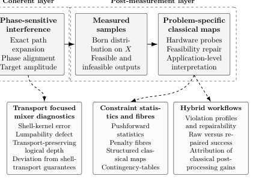
<figcaption class="paper-figure-caption"><b>Fig 1.</b> Figure 1: Layered structure of the framework. Problem constraints determine the encoded product space and the transport requirements imposed on the mixer. The mixer generates shell-resolved abso- lute path mass, while the diagonal phase layers determine whether this mass contributes constructively to the target amplitude. Measurement produces a classical distribution on the product space, after which problem-specific classical maps expose application structure, provide hardware probes, and guide feasibility-restoring repair. The lower boxes summarize the principal analytical and application conse- quences developed in this work.</figcaption>
</figure>
<figure class="paper-figure-card">
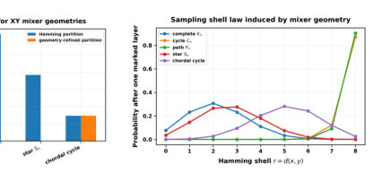
<figcaption class="paper-figure-caption"><b>Fig 2.</b> Figure 2: Finite-size transport diagnostics for XY mixer geometries on the OFM product manifold. The local alphabet size is n = 9, the shell-profile experiment uses m = 8 product blocks, and each mixer is normalized by the spectral norm of its one-block adjacency matrix. The left panel shows that mixer geometry changes the available one-site absolute transfer mass. The middle panel shows that complete- graph XY closes exactly on Hamming shells, while other geometries select refined reduced statistics such as cyclic distance, path distance, or graph-distance data. The right panel shows that these transport differences already produce distinct shell sampling laws before any problem-specific...</figcaption>
</figure>
</div>

<p><strong>Summary.</strong> This paper introduces a framework to disentangle the geometric movement of probability amplitude from the constructive interference effects in quantum optimization. It shows that simple mixing alone is insufficient for finding solutions; true advantage requires engineering phases so that multiple computational paths interfere constructively at the target state. This offers a powerful diagnostic tool for designing robust quantum algorithms.</p>
<p><strong>Why it may be interesting.</strong> It provides a rigorous analytical tool to diagnose <em>why</em> quantum algorithms fail or succeed in constrained settings, separating hardware/mixing limitations from algorithmic phase control requirements.</p>
<details>
<summary>Detailed structure</summary>
<p><strong>Main problem.</strong> The core problem is separating geometric effects (amplitude transport) from quantum interference when analyzing constrained optimization algorithms.</p>
<p><strong>Main result.</strong> Quantum sampling advantage requires coherent phase alignment among computational paths, allowing for a certified success probability independent of the Hilbert-space dimension or search space size.</p>
<p><strong>Method.</strong> The authors develop a framework that analytically separates amplitude transport (geometry) from constructive interference (phase control) within an alternating quantum circuit structure.</p>
<p><strong>Model / system.</strong> The model involves encoding constrained optimization problems (like routing/scheduling) into product spaces, governed by a mixing operator and subsequent diagonal phase layers.</p>
<p><strong>Key observables.</strong> Target amplitude / Success Probability; Shell-resolved absolute path mass; Coherent interference contribution.</p>
<p><strong>Important parameters / regimes.</strong> Circuit depth (number of alternations); Problem size; Feasible-set cardinality.</p>
<p><strong>Assumptions / limitations.</strong> The separation relies on the assumption that the one-step transfer kernel factorizes across coordinates, and specific phase alignment conditions must be met for advantage.</p>
<p><strong>Figures summary.</strong> Figure 1 illustrates a layered process: Constraints define the space $
ightarrow$ Mixer generates path mass (Geometry) $
ightarrow$ Diagonal phases determine constructive contribution (Coherence) $
ightarrow$ Measurement yields classical results.</p>
<p><strong>Paper structure.</strong> The paper builds by first defining the constrained product space, then developing a framework to decompose the dynamics into geometric transport and coherent interference components, culminating in deriving conditions for achieving certified success probabilities.</p>
</details>
<details>
<summary>Abstract</summary>
<p>We study the separation of geometric effects from quantum interference in quantum optimization algorithms. Constrained optimization problems such as routing, assignment, and scheduling are often encoded as product spaces of local variables, together with global feasibility penalties. The central algorithmic question we address is how a constraint-preserving mixing operator transports quantum amplitude across an exponential search space in the presence of local and global constraints. We develop a framework that separates three effects that are usually intermixed: amplitude transport, coherent interference among transported amplitudes, and problem-dependent classical postprocessing. We show that the mixing operator alone does not have a target-seeking ability. Concretely, the normalized distribution induced by its amplitude transport moves toward the distance profile of a uniformly random configuration. Thus, quantum sampling advantage may only arise when the phases of the many computational paths reaching a target configuration are sufficiently aligned for their amplitudes to reinforce. We show that, when the cost phases are engineered so that these paths add coherently, a number of circuit alternations growing only logarithmically with problem size suffices to convert the sum of their absolute contributions into a lower bound on the target amplitude, yielding a certified success probability independent of the ambient Hilbert-space dimension, the search-space size, or the feasible-set cardinality. We develop applications to problem-specific transpilation diagnostics, scalable hardware probes, constraint-induced classical maps of quantum-generated samples, the attribution of solution quality between the quantum distribution and classical post-processing in hybrid quantum-classical workflows and connections to distance-partitioned product spaces from classical coding theory.</p>
</details>
<p><sub><a href="#top">↑ back to top</a></sub></p>
<h2 id="other-papers-9">Other papers (9)</h2>
<p><em>Papers from primary archives without highlighted authors or any topic match. Click to expand.</em></p>
<details>
<summary>Show other papers</summary>

<p><a id="paper-2607.13374"></a></p>
<h3 id="a-physics-grounded-qubo-encoding-of-irrigation-scheduling-for-qaoa"><a href="http://arxiv.org/abs/2607.13374v1">A Physics-Grounded QUBO Encoding of Irrigation Scheduling for QAOA</a></h3>
<p><strong>Authors:</strong> Alisher Ortikov, Alisher Ilhamov<br>
<strong>Type:</strong> both · <strong>Category:</strong> quantum information and computing · <strong>PDF:</strong> <a href="https://arxiv.org/pdf/2607.13374v1">https://arxiv.org/pdf/2607.13374v1</a><br>
<strong>Analysis basis:</strong> full PDF text, analyzed in chunks</p>
<div class="figure-strip-hint">↔ Scroll figures horizontally</div>
<div class="paper-figures-scroll">
<figure class="paper-figure-card">
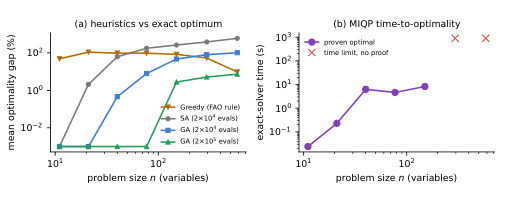
<figcaption class="paper-figure-caption"><b>Fig 1.</b> Fig. 2. Classical scaling study on the real-soil instance ladder. (a) Mean optimality gap (20 seeds) of matched-budget SA and GA (2×104 evaluations), GA at 10× budget, and the greedy operational rule, relative to the proven optimum (n ≤150) or the best-known solution (n = 295, 584). (b) Exact MIQP time-to-optimality; crosses mark the license-capped fallback solver hitting its 900-s limit without a proof. Fixed-budget heuristic degradation is a budget artifact (the 10×-budget GA restores near-optimality), and certified exact solution remains fast through n = 150: no classical wall is observed at these sizes.</figcaption>
</figure>
<figure class="paper-figure-card">
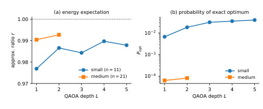
<figcaption class="paper-figure-caption"><b>Fig 2.</b> Fig. 1. Ideal QAOA depth scan. (a) Normalized approximation ratio of the energy expectation; dotted/dashed gray lines mark the SA mean over 20 matched-budget seeds for the small/medium instances. (b) Probability of sampling the exact optimum; uniform baselines are 2−11 and 2−21.</figcaption>
</figure>
<figure class="paper-figure-card">
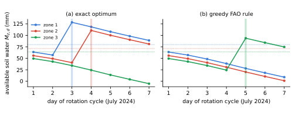
<figcaption class="paper-figure-caption"><b>Fig 3.</b> Fig. 3. Root-zone available water trajectories for the small instance, driven by observed 2024 Khorezm forcing; dotted lines mark the targets Tz and shaded verticals the irrigation events. (a) Exact optimum: triage — zones 1 and 2 are dosed before their windows close and zone 3 is deliberately sacrificed. (b) Greedy FAO-trigger rule: the depletion trigger fires only after the windows of zones 1 and 2 have closed; one dose goes to zone 3 and the second is never spent, leaving a 48.7% optimality gap.</figcaption>
</figure>
<figure class="paper-figure-card">
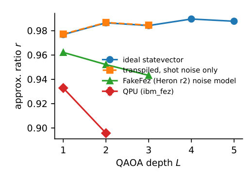
<figcaption class="paper-figure-caption"><b>Fig 4.</b> Fig. 4. Approximation ratio of the sampled energy on the small instance: ideal statevector, transpiled circuits under shot noise only, the calibrated FakeFez (Heron r2) noise model, and IBM Heron hardware (ibm_fez; the L=1 point is the mean of four repeat executions). Noise inverts the benefit of depth.</figcaption>
</figure>
</div>
<p><strong>Summary.</strong> This paper tackles optimizing irrigation scheduling in water-scarce regions by formulating it as a QUBO problem. The authors successfully map the complex hydrological dynamics and operational constraints onto a 2-local Ising Hamiltonian suitable for QAOA. They emphasize that their primary contribution is providing a physically grounded, data-complete encoding rather than claiming quantum computational superiority.</p>
<p><strong>Why it may be interesting.</strong> While not directly about AMO physics, the rigorous process of translating complex physical constraints (like hydrology) into a mathematically structured Hamiltonian is highly relevant for developing quantum algorithms for real-world scientific modeling beyond simple toy models.</p>
<details>
<summary>Detailed structure</summary>
<p><strong>Main problem.</strong> The paper formulates rotational irrigation scheduling, a complex combinatorial optimization problem, into a QUBO suitable for quantum computation.</p>
<p><strong>Main result.</strong> They successfully map the physical constraints onto a 2-local Ising Hamiltonian, demonstrating that classical solvers can solve instances up to 150 variables quickly, and they claim no quantum advantage is demonstrated.</p>
<p><strong>Method.</strong> The core method involves linearizing soil-water balance dynamics and constructing a cost function composed of stress, budget, spatial, and timing penalties, which are then mapped to an Ising Hamiltonian for QAOA execution.</p>
<p><strong>Model / system.</strong> The system models water delivery in agricultural zones over time, governed by soil moisture memory. The optimization is framed as minimizing a QUBO/Ising Hamiltonian derived from hydrological equations using observed field data from Uzbekistan.</p>
<p><strong>Key observables.</strong> Optimal irrigation schedule (binary decision vector $x_{z,d}$), total cost function value, and performance metrics comparing exact solvers vs. QAOA outputs.</p>
<p><strong>Important parameters / regimes.</strong> Problem size scales up to 584 variables; the optimization is constrained by a finite water budget ($K$); quantum hardware tested includes the ibm_fez backend.</p>
<p><strong>Assumptions / limitations.</strong> Key assumptions include linearizing the soil-water balance (Assumption 1) and using symmetric quadratic penalties for stress, which are necessary to achieve a 2-local Hamiltonian structure.</p>
<p><strong>Figures summary.</strong> The notes do not detail figure contents, but mention benchmarking tables (Table II, Table III) detailing parameters for small, medium, and large instances tested across various solvers.</p>
<p><strong>Paper structure.</strong> The paper establishes the physical problem, derives the QUBO formulation by linearizing dynamics, details the mapping to a 2-local Ising Hamiltonian, benchmarks performance against classical methods (MIQP), and finally tests execution on quantum hardware using both standard QAOA and an XY-mixer variant.</p>
</details>
<details>
<summary>Abstract</summary>
<p>Rotational irrigation scheduling in water-scarce Central Asia is a densely coupled combinatorial problem: soil-moisture memory links each irrigation decision to all later days within a zone, field adjacency couples zones on overlapping window days, and rigid canal rotations quantize water delivery in time. We formulate it as a Quadratic Unconstrained Binary Optimization (QUBO) by linearizing the root-zone water balance, so the quadratic crop-stress objective generates the physical couplings as 2-local Ising interactions with no higher-order terms; only the water-budget constraint requires an artificial all-to-all penalty, which we certify with an instance-adaptive weight bound an order of magnitude tighter than generic prescriptions. Every instance is built from observed data for a cotton district in Khorezm, Uzbekistan: NASA POWER meteorology, FAO-56 Penman--Monteith evapotranspiration, SoilGrids~2.0 hydraulics, measured capillary fluxes, and documented canal-rotation windows that enter as qubit-count reductions. We benchmark four tiers -- exact solvers, matched-budget heuristics, ideal-statevector quantum approximate optimization algorithm (QAOA), and noise-model plus IBM Heron execution -- and add a scaling study on soil instances up to 584 variables. Exact branch-and-bound proves optimality in seconds through 150 variables, and heuristic degradation at fixed evaluation budget is repaired by scaling the budget, so no classical scalability wall appears at deployment-relevant sizes, and none is claimed. On hardware, the informative signal is optimum-sampling enrichment over uniform sampling. We claim no quantum advantage; we deliver a physically grounded, data-complete, reproducible encoding of a societally critical scheduling problem for the quantum-utility era.</p>
</details>
<p><sub><a href="#top">↑ back to top</a></sub></p>

<p><a id="paper-2607.14082"></a></p>
<h3 id="building-shors-algorithm-in-lean-an-agentic-formalization-of-quantum-attacks-on-rsa-2048-and-p-256"><a href="http://arxiv.org/abs/2607.14082v1">Building Shor's Algorithm in Lean: An Agentic Formalization of Quantum Attacks on RSA-2048 and P-256</a></h3>
<p><strong>Authors:</strong> Lei Zhang, Yusheng Zhao, Hongshun Yao, Xin Wang<br>
<strong>Type:</strong> theory · <strong>Category:</strong> quantum information and computing · <strong>PDF:</strong> <a href="https://arxiv.org/pdf/2607.14082v1">https://arxiv.org/pdf/2607.14082v1</a><br>
<strong>Analysis basis:</strong> full PDF text, analyzed in chunks</p>
<div class="figure-strip-hint">↔ Scroll figures horizontally</div>
<div class="paper-figures-scroll">
<figure class="paper-figure-card">

<figcaption class="paper-figure-caption"><b>Fig 1.</b> Fig 1: An overview of the agentic formalization workflow and its trust boundary. The two rows follow artifacts from claim selection and source evidence through formal obligations, Lean development, machine checking, human review, and manuscript integration. The framed stages lie within the proof-term trust boundary; the return arrow denotes revision after human review.</figcaption>
</figure>
<figure class="paper-figure-card">
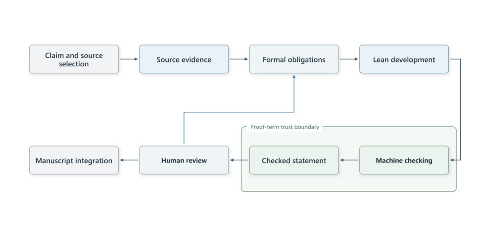
<figcaption class="paper-figure-caption"><b>Fig 2.</b> Figure 1 follows each artifact from a scientific question to the manuscript. Authors first specify the claim and the sources that should support it. Software agents retrieve passages, source locations, and metadata, then separate the claim into mathematical, algorithmic, circuit, and resource obligations. They trace relevant dependencies and construct Lean statements and proof terms for those obligations. The kernel accepts a declaration when its proof term checks against the stated type. The accepted theorem type records its explicit hypotheses, while the development preserves imported dependencies for later inspection. Authors receive these checked statements alongside the source evidence...</figcaption>
</figure>
<figure class="paper-figure-card">
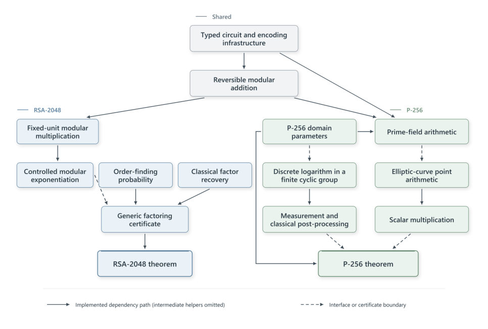
<figcaption class="paper-figure-caption"><b>Fig 3.</b> Fig 2: A dependency map of the Lean development used for the RSA-2048 and P-256 results. Solid arrows show implemented dependency paths, with intermediate helpers omitted; dashed arrows show interface or certificate boundaries. The terminal nodes are the public RSA-2048 and P-256 theorems.</figcaption>
</figure>
</div>
<p><strong>Summary.</strong> This paper details the formal construction of Shor's algorithm to attack RSA-2048 and P-256 within the Lean proof assistant. Using an agentic workflow, the authors derive quantitative resource estimates (qubits, gates) for these attacks by building complex reversible quantum circuits. It represents a major step toward machine-checked verification of quantum cryptanalysis.</p>
<p><strong>Why it may be interesting.</strong> While focused on cryptography, the rigorous formalization process—using AI agents to build complex quantum circuits in a proof assistant—represents a significant methodological advance for verifying any large-scale quantum algorithm.</p>
<details>
<summary>Detailed structure</summary>
<p><strong>Main problem.</strong> The paper formalizes quantum attacks, specifically Shor's algorithm, against established cryptographic systems like RSA-2048 (integer factorization) and P-256 (discrete logarithms). It aims to provide machine-checked proofs of the required resources for these attacks.</p>
<p><strong>Main result.</strong> The authors derived specific resource estimates—including logical qubits, Toffoli gates, and circuit depth—for breaking both RSA-2048 and P-256, presenting quantitative results in a formal proof assistant (Lean).</p>
<p><strong>Method.</strong> They employ agentic formalization within the Lean proof assistant to build complex quantum circuits for modular arithmetic and point addition. This involves combining theoretical cryptographic reductions with rigorous, machine-checkable circuit construction.</p>
<p><strong>Model / system.</strong> The model is abstract quantum computation, utilizing reversible quantum circuits (e.g., controlled operations) implemented in a formal framework. The targets are the mathematical structures underpinning RSA and elliptic curve cryptography.</p>
<p><strong>Key observables.</strong> Logical qubits, Toffoli gates, maximal circuit depth, success probability ($\ge 2/3$), and classical arithmetic operation counts.</p>
<p><strong>Important parameters / regimes.</strong> RSA-2048 modulus size (2048 bits) and P-256 curve parameters (NIST standard).</p>
<p><strong>Assumptions / limitations.</strong> The reported resources are for logical qubits and Toffoli gates, neglecting physical overheads like noise or error correction. The process assumes a clear separation between formal checking guarantees and scientific judgment.</p>
<p><strong>Figures summary.</strong> Figures illustrate dependency maps showing how the final theorems depend on foundational components like reversible modular addition circuits and resource accounting steps.</p>
<p><strong>Paper structure.</strong> The work is structured around developing terminal propositions in Lean for both RSA-2048 (factor recovery) and P-256 (scalar recovery). This involves building necessary arithmetic primitives first, then assembling them into the final attack algorithms while meticulously tracking all required resources.</p>
</details>
<details>
<summary>Abstract</summary>
<p>Large language models are increasingly assisting with demanding formal theorem-proving tasks, particularly when grounded in machine-checked libraries such as Lean. Agentic systems further amplify this process by searching, reusing, and extending existing formal developments to uncover new discoveries. In quantum computing, Shor's algorithm and its variants present such a demanding case for Lean formalization. In this work, we formalize this algorithm family in Lean through agentic formalization: software agents analyze sources, write Lean code and repair proofs, with human review of the scientific claims and machine checking of the resulting formal proofs. Our formalization develops the mathematical foundations for analyzing quantum attacks in two cryptographic settings: a 2048-bit modulus in the RSA-2048 and the standardized elliptic curve over a 256-bit prime field (P-256). To support these analyses, the formalization ranges from quantum algorithms for order finding to reversible quantum circuits for modular and elliptic-curve arithmetic. Based on [Quantum 5, 433] and [ASIACRYPT 2017, 241--270], we formalize the logical resource estimates for RSA-2048 and P-256, respectively, and provide additional estimates of classical operations. We expect the results pave the way for broader machine-checked quantum cryptanalysis and represent a step toward AI-assisted design and verification of quantum algorithms.</p>
</details>
<p><sub><a href="#top">↑ back to top</a></sub></p>

<p><a id="paper-2607.13872"></a></p>
<h3 id="continuous-limit-of-the-square-well-problem-in-quantum-mechanics"><a href="http://arxiv.org/abs/2607.13872v1">Continuous limit of the square well problem in quantum mechanics</a></h3>
<p><strong>Authors:</strong> Matheus D. Moro, Thiago T. Tsutsui, Antonio S. M. de Castro, Fabiano M. Andrade<br>
<strong>Type:</strong> theory · <strong>Category:</strong> other · <strong>PDF:</strong> <a href="https://arxiv.org/pdf/2607.13872v1">https://arxiv.org/pdf/2607.13872v1</a><br>
<strong>Analysis basis:</strong> full PDF text, analyzed in chunks</p>
<div class="figure-strip-hint">↔ Scroll figures horizontally</div>
<div class="paper-figures-scroll">
<figure class="paper-figure-card">
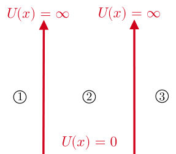
<figcaption class="paper-figure-caption"><b>Fig 1.</b> FIG. 1. Schematic representation of the (a) finite and (b) infinite square well.</figcaption>
</figure>
<figure class="paper-figure-card">
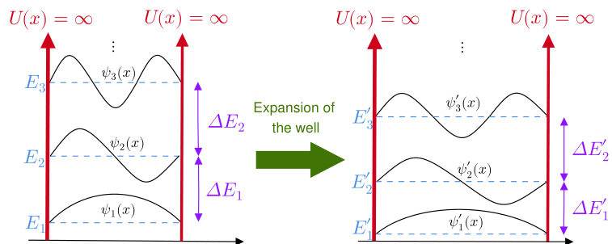
<figcaption class="paper-figure-caption"><b>Fig 2.</b> FIG. 2. Schematic and out-of-scale illustration of the expansion of the well and its effects on the energy difference between levels. The expansion (L′ &gt; L), results in E′ n &lt; En and ∆E′ n &lt; ∆En.</figcaption>
</figure>
</div>
<p><strong>Summary.</strong> This paper rigorously proves that the free-particle solution can be derived from the bound state solutions of the finite square well by taking the width to infinity. It uses Fourier transforms to map the discrete energy spectrum onto a continuous one, showing the mathematical consistency between confined and unconfined quantum systems.</p>
<p><strong>Why it may be interesting.</strong> This work provides a fundamental, rigorous demonstration of how continuum limits are handled in quantum mechanics, which is crucial for understanding effective Hamiltonians or open system approximations where boundaries become negligible.</p>
<details>
<summary>Detailed structure</summary>
<p><strong>Main problem.</strong> The work systematically demonstrates the mathematical transition from the discrete, quantized energy spectrum of a finite square well to the continuous spectrum characteristic of a free particle.</p>
<p><strong>Main result.</strong> By applying Fourier analysis and taking the limit where the confining width approaches infinity, the bound state solutions correctly recover the plane-wave form of the free particle wave function.</p>
<p><strong>Method.</strong> The core method involves solving the time-independent Schrödinger equation for both finite and infinite wells, followed by mapping the resulting discrete summation structure onto a continuous integral representation using Fourier transform techniques.</p>
<p><strong>Model / system.</strong> The model is a quantum particle confined by a potential $U(x)$, comparing the free particle case to the finite and infinite square well potentials. The governing equation is the time-independent Schrödinger equation.</p>
<p><strong>Key observables.</strong> Energy spectrum ($E$): transitioning from discrete eigenvalues ($E_n$) to a continuous band; wave functions ($\psi$).</p>
<p><strong>Important parameters / regimes.</strong> Well width ($L$), potential height ($U_0$), and the limit $L 	o \infty$.</p>
<p><strong>Assumptions / limitations.</strong> The derivation relies on treating the transition from a discrete sum (Fourier Series) to a continuous integral (Fourier Transform), which requires careful handling of limits.</p>
<p><strong>Figures summary.</strong> Figure 1 schematically shows the potential profiles for finite and infinite wells. Figure 2 illustrates how the energy level spacing ($\Delta E$) decreases as $L$ increases, leading toward the continuum limit.</p>
<p><strong>Paper structure.</strong> The paper progresses by first establishing solutions for the free particle (continuous spectrum), then solving the finite square well problem (discrete spectrum), and finally executing the mathematical procedure to show that the continuous limit of the discrete solutions yields the free-particle plane wave.</p>
</details>
<details>
<summary>Abstract</summary>
<p>The free-particle and square-well potentials are two of the most emblematic problems in quantum mechanics, illustrating essential concepts such as matter waves, energy quantization, and bound states. It is therefore natural to consider how the free-particle solutions emerge from the square well as the width approaches infinity. In this work, we present a systematic procedure to demonstrate this transition by applying a Fourier transform to the wave equation.</p>
</details>
<p><sub><a href="#top">↑ back to top</a></sub></p>

<p><a id="paper-2607.13827"></a></p>
<h3 id="inherent-interpretability-provides-inherent-value-in-quantum-machine-learning"><a href="http://arxiv.org/abs/2607.13827v1">Inherent interpretability provides inherent value in quantum machine learning</a></h3>
<p><strong>Authors:</strong> Kaitlin Gili, Zachary P. Bradshaw<br>
<strong>Type:</strong> theory · <strong>Category:</strong> other · <strong>PDF:</strong> <a href="https://arxiv.org/pdf/2607.13827v1">https://arxiv.org/pdf/2607.13827v1</a><br>
<strong>Analysis basis:</strong> full PDF text, analyzed in chunks</p>
<div class="figure-strip-hint">↔ Scroll figures horizontally</div>
<div class="paper-figures-scroll">
<figure class="paper-figure-card">
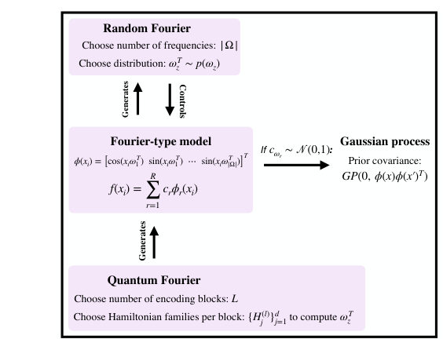
<figcaption class="paper-figure-caption"><b>Fig 1.</b> FIG. 1: Visual representation of the inherent interpretability offerings of RFF and quantum Fourier models for GP model design. Hamiltonian choices offer a bottom-up route to the kernel function design of GPs – in contrast to the top-down design of an explicit spectral distribution in RFF.</figcaption>
</figure>
</div>
<p><strong>Summary.</strong> This paper argues that the true value of Quantum Machine Learning lies in its inherent mathematical structure—its interpretability—rather than just its performance relative to classical methods. It demonstrates this by comparing how quantum Fourier models and Random Fourier Features can both approximate GP kernels, showing that quantum tools offer unique mechanisms for principled model design. This reframes QML research to value the underlying physical or mathematical components of quantum circuits.</p>
<p><strong>Why it may be interesting.</strong> It bridges advanced topics like algebraic topology and group theory (used to constrain models) directly into the practical methodology of machine learning, offering theoretical frameworks for building physically motivated quantum algorithms.</p>
<details>
<summary>Detailed structure</summary>
<p><strong>Main problem.</strong> The field of Quantum Machine Learning (QML) needs a value proposition beyond merely matching classical ML performance, especially given that model interpretability is crucial for real-world deployment.</p>
<p><strong>Main result.</strong> The value of QML models should be characterized by their inherent mathematical structure and interpretability offerings, rather than solely by task performance metrics.</p>
<p><strong>Method.</strong> The authors compare quantum Fourier models against Random Fourier Features (RFF) in the context of designing interpretable Gaussian Process (GP) kernels for uncertainty quantification.</p>
<p><strong>Model / system.</strong> The work analyzes parameterized quantum circuits (QNNs) and uses Bayesian linear regression within a GP framework. It compares feature mapping techniques derived from classical spectral distributions (RFF) versus those arising naturally from quantum information tools (Quantum Fourier Models).</p>
<p><strong>Key observables.</strong> Model interpretability, uncertainty quantification ($\sigma^2_{	ext{pred}}$), and the ability to encode domain-specific inductive biases.</p>
<p><strong>Important parameters / regimes.</strong> The spectral distribution $p(\omega_z)$ controlling RFFs; the Hamiltonian families $\{H^{(l)}_j\}$ used in quantum feature mapping.</p>
<p><strong>Assumptions / limitations.</strong> The argument assumes that demonstrating inherent interpretability benefits justifies the use of potentially resource-intensive quantum computation for ML tasks.</p>
<p><strong>Figures summary.</strong> Figure 1 visually contrasts the bottom-up kernel design approach using Hamiltonian families (Quantum Fourier Models) against the top-down spectral distribution choice in RFFs.</p>
<p><strong>Paper structure.</strong> The paper establishes the need for interpretability in QML, provides a detailed mathematical comparison between Quantum Fourier Models and RFFs via GP kernels, and concludes with a review of various quantum information tools (symmetry, topology) that enable inherently interpretable model design.</p>
</details>
<details>
<summary>Abstract</summary>
<p>The field of quantum machine learning (QML) evolved to value models believed to most directly rival those providing utility in classical ML, namely large-scale neural networks. Although more recently, classical ML has been learning a hard lesson with respect to deploying un-interpretable neural networks in the wild: model interpretability matters for domain-adapted co-design and human adoption. We adopt this larger ML perspective to argue that quantum ML model value can be found through the characterization of its inherent interpretability offerings -- i.e. its mathematical structure that contributes meaningfully to desired model behavior for the specific ML task. To support our perspective, we provide a motivating example of a characterization with quantum Fourier models and random Fourier features (RFF) as approaches to approximate Gaussian process (GP) kernels for uncertainty quantification tasks in ML. The top-down and bottom-up complementarity of the two mathematical constructions reveals that quantum Fourier models offer different tools than RFFs for principled GP kernel design and interpretable discovery for uncertainty quantification with real-world data. To showcase the rich variety of inductive biases enabled by quantum information tools, we review examples from the QML literature -- including symmetry, metric geometry, and topology -- that can be used to design inherently interpretable ML models for specific tasks. We hope this framing encourages the QML community to value the inherent components and mechanisms of quantum models separately from task performance, as inherent interpretability might be the reason that a quantum model, and potentially a quantum computer, gets used in practice for ML.</p>
</details>
<p><sub><a href="#top">↑ back to top</a></sub></p>

<p><a id="paper-2607.13244"></a></p>
<h3 id="let-the-qudit-do-the-jacobi-a-structured-quantum-algorithm-for-spectral-decomposition"><a href="http://arxiv.org/abs/2607.13244v1">Let the Qudit Do the Jacobi: A Structured Quantum Algorithm for Spectral Decomposition</a></h3>
<p><strong>Authors:</strong> A. Mandilara<br>
<strong>Type:</strong> theory · <strong>Category:</strong> quantum information and computing · <strong>PDF:</strong> <a href="https://arxiv.org/pdf/2607.13244v1">https://arxiv.org/pdf/2607.13244v1</a><br>
<strong>Analysis basis:</strong> full PDF text, analyzed in chunks</p>
<div class="figure-strip-hint">↔ Scroll figures horizontally</div>
<div class="paper-figures-scroll">
<figure class="paper-figure-card">
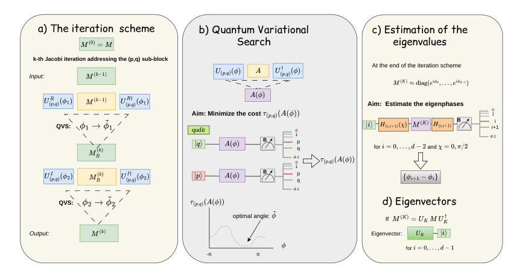
<figcaption class="paper-figure-caption"><b>Fig 1.</b> FIG. 1: Overview of the proposed Jacobi Qudit Algorithm (JQA). (a) Iteration scheme for a single Jacobi step acting on the (p, q) subspace. Each iteration consists of two successive one-dimensional quantum variational searches (QVS), determining the optimal parameters of the real and imaginary Givens rotations, followed by the corresponding updates of the transformed operator. (b) Quantum variational search used to determine each rotation parameter. The local cost function is evaluated through repeated measurements of the observable B on the computational basis states |p⟩and |q⟩, and the optimal rotation angle ˜ϕ is obtained by minimizing the resulting one-dimensional cost landscape. (c)...</figcaption>
</figure>
<figure class="paper-figure-card">
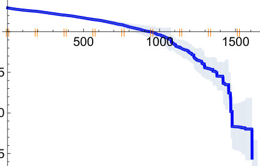
<figcaption class="paper-figure-caption"><b>Fig 2.</b> FIG. 2: Evolution of the average off-diagonal cost function log(τ(M)) as a function of the pivot count for d = 20, averaged over fifteen Haar-random unitary matrices. The solid curve represents the ensemble average, while the error bars indicate one standard deviation. The double vertical marks (||) denote the completion of successive Jacobi sweeps. The nearly linear decrease during the first sweeps, followed by a progressively faster decay, is characteristic of cyclic Jacobi-type diagonalization algorithms.</figcaption>
</figure>
</div>
<p><strong>Summary.</strong> This paper presents the Jacobi Qudit Algorithm (JQA) for finding the eigenvalues and eigenvectors of unknown unitary operators acting on qudits. It achieves this by mapping the iterative Givens rotation steps into sequential, experimentally accessible single-parameter variational optimizations. The work is significant because it establishes a structured quantum method that mirrors classical numerical efficiency while being naturally suited for qudit architectures.</p>
<p><strong>Why it may be interesting.</strong> It provides a concrete blueprint for implementing complex numerical linear algebra routines directly on hardware (qudits), offering a structured path from classical theory to quantum circuit realization.</p>
<details>
<summary>Detailed structure</summary>
<p><strong>Main problem.</strong> The core problem is developing a quantum algorithm for spectral decomposition of unknown unitary operators, specifically realizing the Jacobi diagonalization procedure on qudits.</p>
<p><strong>Main result.</strong> The proposed structured quantum algorithm preserves the convergence behavior of classical Jacobi methods and achieves expected quadratic scaling ($O(d^2)$) in elementary operations with dimension $d$.</p>
<p><strong>Method.</strong> It implements Givens rotations using two sequential, experimentally accessible single-parameter quantum variational optimizations rather than explicit operator reconstruction or controlled unitaries.</p>
<p><strong>Model / system.</strong> The system is a qudit (dimension $d$) undergoing unitary evolution governed by an unknown unitary operator. The method mimics the classical Jacobi algorithm for normal matrices.</p>
<p><strong>Key observables.</strong> Convergence of the off-diagonal norm ($    au(M)$), eigenvalues extracted via interferometry, and the number of required Jacobi sweeps.</p>
<p><strong>Important parameters / regimes.</strong> The dimension $d$ of the qudit space; the target accuracy $\epsilon$; and the structure of the unitary operator $M$.</p>
<p><strong>Assumptions / limitations.</strong> The primary assumption is that elementary two-parameter Givens rotations can be decomposed into two sequential single-parameter variational optimizations, which are experimentally feasible.</p>
<p><strong>Figures summary.</strong> Figure 3 compares the average number of Jacobi sweeps required for different accuracies ($\epsilon$) across dimensions $d$, showing the scaling behavior of the JQA compared to generic methods.</p>
<p><strong>Paper structure.</strong> The paper introduces the problem by relating it to classical Jacobi diagonalization, details the qudit-native quantum realization using sequential variational optimizations for Givens rotations, discusses eigenvalue extraction via interferometry, and concludes with complexity analysis and future directions like parallelization.</p>
</details>
<details>
<summary>Abstract</summary>
<p>Jacobi diagonalization is a long-established numerical algorithm for the spectral decomposition of Hermitian and, more generally, normal matrices. In this work, we develop a qudit-native quantum realization of the Jacobi diagonalization algorithm for unknown unitary operators. The proposed framework avoids explicit reconstruction of the operator and controlled-unitary operations. Each elementary two-parameter Givens rotation is implemented through two sequential single-parameter quantum variational optimizations that are directly accessible experimentally. An interferometric protocol is further introduced for extracting the eigenvalues of the diagonalized unitary, up to an overall global phase. Numerical simulations on ensembles of Haar-random unitary matrices demonstrate that the proposed algorithm preserves the characteristic convergence behavior of the classical Jacobi method and exhibits the expected quadratic scaling in the number of elementary operations with the dimension $d$, comparable to its classical counterpart. The results establish the proposed algorithm as a structured quantum numerical linear algebra algorithm naturally suited to qudit architectures and provide a bridge between classical iterative matrix algorithms and their quantum realizations.</p>
</details>
<p><sub><a href="#top">↑ back to top</a></sub></p>

<p><a id="paper-2607.14091"></a></p>
<h3 id="pair-partition-constructions-for-cpm-based-quantum-ldpc-codes"><a href="http://arxiv.org/abs/2607.14091v1">Pair-Partition Constructions for CPM-Based Quantum LDPC Codes</a></h3>
<p><strong>Authors:</strong> Koki Okada, Kenta Kasai<br>
<strong>Type:</strong> theory · <strong>Category:</strong> quantum information and computing · <strong>PDF:</strong> <a href="https://arxiv.org/pdf/2607.14091v1">https://arxiv.org/pdf/2607.14091v1</a><br>
<strong>Analysis basis:</strong> full PDF text, analyzed in chunks</p>
<div class="figure-strip-hint">↔ Scroll figures horizontally</div>
<div class="paper-figures-scroll">
<figure class="paper-figure-card">
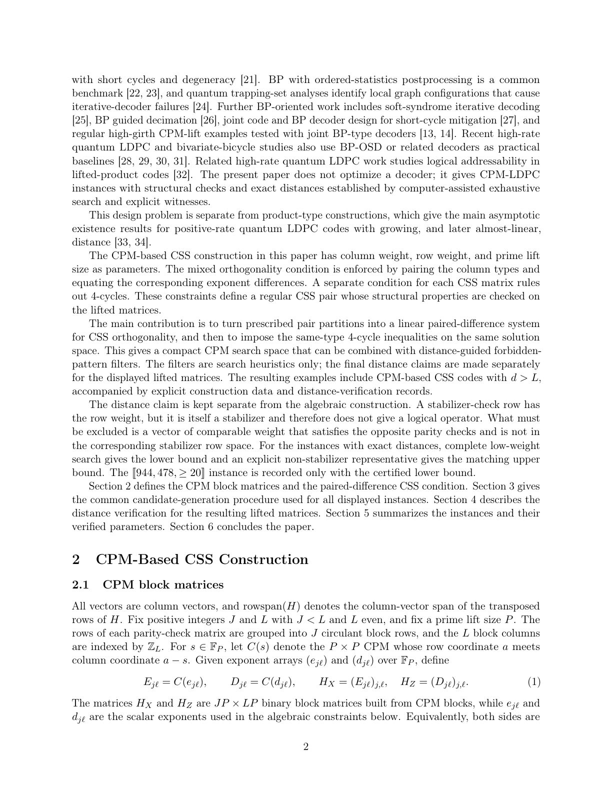
<figcaption class="paper-figure-caption"><b>Fig 1.</b> Low-resolution page preview, page 2</figcaption>
</figure>
<figure class="paper-figure-card">
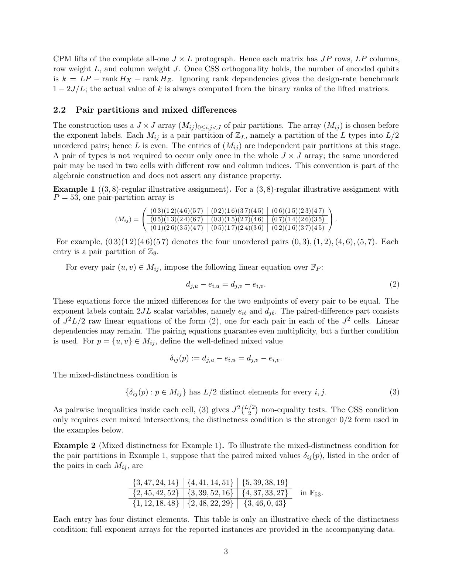
<figcaption class="paper-figure-caption"><b>Fig 2.</b> Low-resolution page preview, page 3</figcaption>
</figure>
<figure class="paper-figure-card">
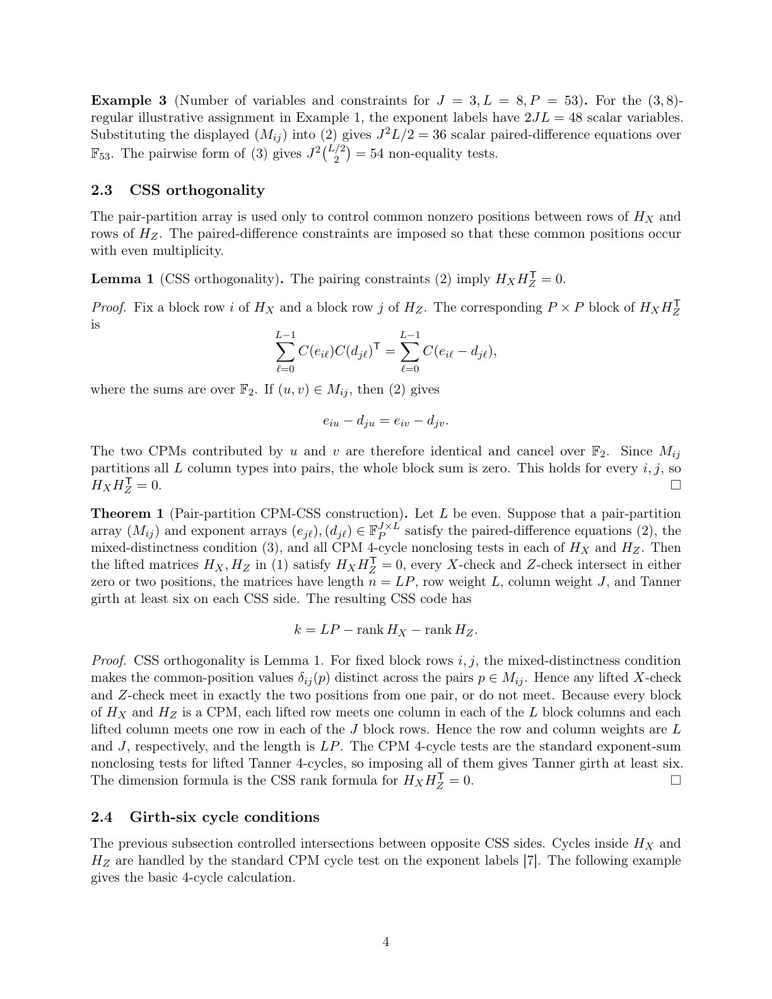
<figcaption class="paper-figure-caption"><b>Fig 3.</b> Low-resolution page preview, page 4</figcaption>
</figure>
<figure class="paper-figure-card">

<figcaption class="paper-figure-caption"><b>Fig 4.</b> Low-resolution page preview, page 5</figcaption>
</figure>
<figure class="paper-figure-card">

<figcaption class="paper-figure-caption"><b>Fig 5.</b> Low-resolution page preview, page 6</figcaption>
</figure>
</div>
<p><strong>Summary.</strong> This paper details a method to construct robust binary CSS quantum LDPC codes by utilizing pair-partition constructions based on circulant permutation matrices. The authors derive necessary algebraic conditions that guarantee structural integrity, leading to the explicit reporting of several high-performance code examples with rigorously verified distances.</p>
<p><strong>Why it may be interesting.</strong> This work provides advanced theoretical tools for constructing quantum error-correcting codes with desirable properties (high rate, high girth), which is fundamental knowledge for building fault-tolerant quantum computation architectures.</p>
<details>
<summary>Detailed structure</summary>
<p><strong>Main problem.</strong> The primary goal is constructing binary Calderbank–Shor–Steane (CSS) quantum low-density parity-check (LDPC) codes using circulant permutation matrices (CPMs).</p>
<p><strong>Main result.</strong> The authors report specific, high-rate examples of such codes, including the (J,L)=(4,12)-regular girth-six code [[372,130,16]] with rate 0.349.</p>
<p><strong>Method.</strong> Construction relies on imposing linear paired-difference equations derived from a pair partition array onto CPM exponents to guarantee CSS orthogonality and structural properties like high Tanner girth.</p>
<p><strong>Model / system.</strong> The model is the quantum error correcting code itself, defined by two parity check matrices, $H_X$ and $H_Z$, which are constructed using CPMs parameterized by column weight J, row weight L, and prime lift size P.</p>
<p><strong>Key observables.</strong> Code parameters $[[n, k, d]]$, rate ($1 - 2J/L$), Tanner girth (at least six), and minimum distance $d$.</p>
<p><strong>Important parameters / regimes.</strong> Column weight J, row weight L, prime lift size P.</p>
<p><strong>Assumptions / limitations.</strong> The final distance claims require independent verification via exhaustive low-weight exclusion and explicit non-stabilizer witnesses, separate from the algebraic construction guarantees.</p>
<p><strong>Figures summary.</strong> Figures illustrate the pair-partition array $(M_{ij})$, the mixed-distinctness condition using sample values in $\mathbb{F}_{53}$, and details on variables/constraints for specific parameter choices.</p>
<p><strong>Paper structure.</strong> The paper develops by first establishing necessary algebraic conditions (Theorem 1) guaranteeing structural properties like orthogonality and girth. These conditions are then implemented in a systematic search algorithm to find concrete examples, culminating in rigorous distance verification procedures.</p>
</details>
<details>
<summary>Abstract</summary>
<p>We construct binary Calderbank--Shor--Steane (CSS) quantum low-density parity-check (LDPC) codes from circulant permutation matrices (CPMs). The construction is parameterized by column weight J, row weight L, and prime lift size P. A J x J array of pair partitions imposes linear paired-difference equations on the CPM exponents. These equations give CSS orthogonality. The main finite examples reported here are the (J,L)=(4,12)-regular girth-six code [[372,130,16]] with rate 0.349, and the (J,L)=(4,14)-regular girth-six code [[518,228,16]] with rate 0.440. We also record (J,L)=(3,8)-regular girth-six instances [[472,122,14]] and [[488,126,14]], with lift sizes P=59 and P=61, respectively. The stated distances are established for the fixed matrices by exhaustive low-weight exclusion together with explicit non-stabilizer witnesses.</p>
</details>
<p><sub><a href="#top">↑ back to top</a></sub></p>

<p><a id="paper-2607.13466"></a></p>
<h3 id="pqfa-parallel-quantum-feature-augmentation-of-fused-representations-for-multimodal-classification"><a href="http://arxiv.org/abs/2607.13466v1">PQFA: Parallel Quantum Feature Augmentation of Fused Representations for Multimodal Classification</a></h3>
<p><strong>Authors:</strong> Mingzhu Wang, Yun Shang<br>
<strong>Type:</strong> theory · <strong>Category:</strong> quantum information and computing · <strong>PDF:</strong> <a href="https://arxiv.org/pdf/2607.13466v1">https://arxiv.org/pdf/2607.13466v1</a><br>
<strong>Analysis basis:</strong> full PDF text, analyzed in chunks</p>
<div class="figure-strip-hint">↔ Scroll figures horizontally</div>
<div class="paper-figures-scroll">
<figure class="paper-figure-card">

<figcaption class="paper-figure-caption"><b>Fig 1.</b> Figure 1: Overall architecture of the proposed Parallel Quantum Feature Augmentation (PQFA) framework. Text and image inputs are first encoded by frozen pretrained Transformer encoders. The extracted unimodal token features are projected into a shared latent space, refined by bidirectional cross-attention, summarized by attentive pooling, and fused through an adaptive gating module. The fused classical representation is then processed by two paths: a direct classical path and a parallel quantum augmentation path based on amplitude encoding and multiple shallow parameterized quantum circuits. The resulting quantum readouts are concatenated with the classical fused feature for final...</figcaption>
</figure>
<figure class="paper-figure-card">

<figcaption class="paper-figure-caption"><b>Fig 2.</b> Figure 2: Schematic illustration of the Parallel Quantum Feature Augmentation module. (a) A shallow brickwall parameterized quantum circuit used in each quantum branch. (b) The predefined brick pool consisting of multiple local two-qubit parameterized blocks, which introduces structural diversity across parallel quantum branches.</figcaption>
</figure>
<figure class="paper-figure-card">

<figcaption class="paper-figure-caption"><b>Fig 3.</b> Figure 3: Fine-grained comparison between PQFA and MLP-Aug on MM-IMDb. (a) Per-label F1 difference across genres sorted by support. (b) Mean sample-wise Jaccard gain grouped by MLP-Aug prediction uncertainty. Positive values indicate that PQFA outperforms the width-matched classical augmentation baseline.</figcaption>
</figure>
<figure class="paper-figure-card">

<figcaption class="paper-figure-caption"><b>Fig 4.</b> Figure 4: PCA cumulative explained variance of augmentation features on MM-IMDb. Faster saturation indicates stronger variance concentration in fewer principal directions, whereas slower saturation indicates a more dispersed augmentation feature space.</figcaption>
</figure>
<figure class="paper-figure-card">

<figcaption class="paper-figure-caption"><b>Fig 5.</b> Figure 5: Post-training noisy inference analysis on MM-IMDb. Panel (a) reports Micro-F1 under different noise probabilities, and panel (b) reports the quantum readout drift Dq. All model parameters are fixed during this analysis.</figcaption>
</figure>
</div>
<p><strong>Summary.</strong> The paper introduces Parallel Quantum Feature Augmentation (PQFA), a novel hybrid framework that enhances multimodal feature representations by passing the fused classical output through parallel shallow quantum circuits. By demonstrating superior performance and parameter efficiency compared to purely classical augmentation techniques, PQFA establishes quantum readout as an effective tool for post-fusion learning in complex AI tasks.</p>
<p><strong>Why it may be interesting.</strong> This work directly applies variational quantum algorithms (VQAs) in a hybrid setting for complex data classification, offering a structured way to test quantum advantage in machine learning tasks beyond simple kernel methods or state preparation.</p>
<details>
<summary>Detailed structure</summary>
<p><strong>Main problem.</strong> The primary challenge addressed is enhancing multimodal classification by improving representations <em>after</em> they have been fused, rather than redesigning the entire fusion backbone.</p>
<p><strong>Main result.</strong> PQFA consistently outperforms both unaugmented baselines and MLP augmentation methods on benchmark datasets while using significantly fewer parameters, demonstrating effective post-fusion quantum feature augmentation.</p>
<p><strong>Method.</strong> The method involves amplitude-encoding the classical fused feature into multiple parallel shallow variational quantum circuits (PQCs) whose measurement readouts are concatenated with the original classical representation for final prediction.</p>
<p><strong>Model / system.</strong> It employs a hybrid quantum-classical framework. Classical components use frozen RoBERTa and ViT encoders followed by cross-attention, pooling, and adaptive gated fusion to yield $\mathbf{z}_C$. This is then augmented by parallel PQCs acting on the fused feature.</p>
<p><strong>Key observables.</strong> Classification accuracy improvement over baselines; stable predictive performance across simulated noise levels; parameter efficiency compared to classical alternatives.</p>
<p><strong>Important parameters / regimes.</strong> The number of augmentation parameters (PQFA uses $\approx 2.2\text{K}$ vs. $24.0\text{K}$ for MLP-Aug); the depth and width of the variational quantum circuits.</p>
<p><strong>Assumptions / limitations.</strong> The performance gains are attributed to the learned nonlinear transformation provided by the quantum readouts, not merely increased feature dimensionality or trainable parameters.</p>
<p><strong>Figures summary.</strong> Figure 1 illustrates the overall architecture: Text/Image $\rightarrow$ Encoders $\rightarrow$ Cross-Attention $\rightarrow$ Pooling $\rightarrow$ Adaptive Gating ($\mathbf{z}_C$) $\rightarrow$ Parallel Quantum Augmentation (PQCs) $\rightarrow$ Concatenation $\rightarrow$ Classifier.</p>
<p><strong>Paper structure.</strong> The paper first establishes the need for post-fusion enhancement. It details the PQFA architecture, which processes fused features through parallel quantum circuits. Evaluation involves controlled comparisons against unaugmented and MLP baselines, followed by ablation studies (missing modalities, feature diagnostics) to prove the necessity of the quantum component.</p>
</details>
<details>
<summary>Abstract</summary>
<p>Most multimodal learning methods improve how heterogeneous representations are aligned and fused, while post-fusion enhancement remains less explored. We propose Parallel Quantum Feature Augmentation (PQFA), a hybrid quantum-classical framework that applies multiple shallow variational quantum circuits to fused multimodal features. Text and image representations extracted by frozen RoBERTa and ViT encoders are processed through bidirectional cross-attention, attentive pooling, and adaptive gated fusion. The fused feature is then amplitude-encoded into parallel quantum circuits, whose measurement readouts are concatenated with the classical representation for prediction. We evaluate PQFA on MM-IMDb and N24News through controlled comparisons using the same encoders, fusion backbone, data splits, projection dimension, and augmentation output width. PQFA consistently outperforms both the fusion backbone without quantum augmentation and a width-matched MLP augmentation baseline, while using approximately 2.2K augmentation parameters compared with 24.0K for the MLP branch. Missing-modality experiments further show improved robustness when textual or visual inputs are incomplete, with particularly clear gains when the more informative textual modality is severely degraded. Controlled ablations and feature-space analyses indicate that the improvement cannot be reproduced by random feature mappings, increased classical width, or untrained quantum transformations. Quantum-state diagnostics additionally show stable predictive performance across the tested simulated noise levels and distinct branch-specific transformations of the encoded states. These results establish PQFA as an effective and parameter-efficient strategy for post-fusion augmentation in hybrid quantum-classical multimodal learning.</p>
</details>
<p><sub><a href="#top">↑ back to top</a></sub></p>

<p><a id="paper-2607.13816"></a></p>
<h3 id="quantum-algorithm-for-elliptic-curve-discrete-logarithms-with-space-efficient-point-addition"><a href="http://arxiv.org/abs/2607.13816v1">Quantum Algorithm for Elliptic Curve Discrete Logarithms with Space-Efficient Point Addition</a></h3>
<p><strong>Authors:</strong> Han Luo, Ziyi Yang, Jingquan Luo, Ziruo Wang, Yuexin Su, Xiaoming Sun, Lvzhou Li, Tongyang Li<br>
<strong>Type:</strong> theory · <strong>Category:</strong> quantum information and computing · <strong>PDF:</strong> <a href="https://arxiv.org/pdf/2607.13816v1">https://arxiv.org/pdf/2607.13816v1</a><br>
<strong>Analysis basis:</strong> full PDF text, analyzed in chunks</p>
<div class="figure-strip-hint">↔ Scroll figures horizontally</div>
<div class="paper-figures-scroll">
<figure class="paper-figure-card">

<figcaption class="paper-figure-caption"><b>Fig 1.</b> Figure 1: Toffoli gate count and CNOT gate count for modular inversion and point addition.</figcaption>
</figure>
<figure class="paper-figure-card">

<figcaption class="paper-figure-caption"><b>Fig 2.</b> Figure 2: The overall quantum circuit of Shor’s algorithm for solving ECDLP using QFT. The qubits, from top to bottom, correspond to the exponent registers containing k and ℓin Equation 2 (ordered from lower-order bits to higher-order bits), and to the register that stores the elliptic curve point accumulator.</figcaption>
</figure>
<figure class="paper-figure-card">

<figcaption class="paper-figure-caption"><b>Fig 3.</b> Figure 3: The overall quantum circuit of Shor’s algorithm for solving ECDLP using semiclassical QFT. The gates Rθi denote rotation gates with rotation angle θi = Pi−1 j=0 2i−jµj, where the values µj ∈{0, 1} are outcomes obtained in previous measurements. By employing the semiclassical QFT, the exponent register requires only a single qubit, resulting in a reduction of 2n + 1 qubits compared to the standard implementation.</figcaption>
</figure>
<figure class="paper-figure-card">

<figcaption class="paper-figure-caption"><b>Fig 4.</b> Figure 4: An illustration of how the two Work registers are allocated for temporary variables within a single iteration of the EEA. The upper and lower stripes represent the Work1 and Work2 registers, respectively. The symbols (h) and (l) indicate that the value t′ is split into its higher-order bits (h) and lower-order bits (l), which are placed at the corresponding positions on the two sides of the Work2 register.</figcaption>
</figure>
<figure class="paper-figure-card">

<figcaption class="paper-figure-caption"><b>Fig 5.</b> Figure 5: Overall circuit implementation (first half) of a single iteration of our space-efficient EEA. The three dashed boxes, from left to right, represent: (1) pre-shift operations; (2) location-controlled subtraction on r’s; (3) location-controlled swap.</figcaption>
</figure>
</div>
<p><strong>Summary.</strong> This paper details a highly resource-optimized quantum algorithm for solving the Elliptic Curve Discrete Logarithm Problem (ECDLP). The key innovation is a novel, space-efficient reversible modular inversion circuit that drastically reduces qubit requirements compared to prior methods. This advancement provides a concrete, improved blueprint for implementing Shor's algorithm in practice.</p>
<p><strong>Why it may be interesting.</strong> While focused on cryptography, the detailed quantum arithmetic circuits developed—especially the modular inversion and register-sharing techniques—represent advanced theoretical tools applicable to any quantum computation requiring efficient large-number arithmetic in condensed matter or AMO simulations.</p>
<details>
<summary>Detailed structure</summary>
<p><strong>Main problem.</strong> The primary goal is to develop a quantum algorithm for solving the Elliptic Curve Discrete Logarithm Problem (ECDLP) while significantly reducing the required quantum resources, particularly logical qubits.</p>
<p><strong>Main result.</strong> The authors present a space-efficient construction achieving resource requirements of $3n+6\lfloor \log_2 n
floor+ O(1)$ logical qubits for an $n$-bit prime field curve, representing substantial improvements over previous state-of-the-art estimates.</p>
<p><strong>Method.</strong> The improvement hinges on developing a new space-efficient reversible modular inversion circuit derived from the Extended Euclidean Algorithm (EEA), which addresses the dominant space bottleneck in point addition circuits.</p>
<p><strong>Model / system.</strong> The work operates within the standard quantum circuit model, applying Shor's algorithm structure to ECC over prime fields. The core components involve implementing controlled affine point addition and modular inversion using techniques like register-sharing and location-controlled arithmetic.</p>
<p><strong>Key observables.</strong> Logical qubits (space complexity), Toffoli gate counts, and CNOT gate counts are the primary resources quantified for the algorithm's implementation.</p>
<p><strong>Important parameters / regimes.</strong> The resource costs scale with $n$, the bit-length of the prime field ($n=256$ bits is used as a key example).</p>
<p><strong>Assumptions / limitations.</strong> The analysis assumes the feasibility of implementing complex reversible modular arithmetic circuits, particularly refining EEA state representation using length registers and location-controlled arithmetic.</p>
<p><strong>Figures summary.</strong> Figures illustrate the scaling of Toffoli and CNOT gate counts for modular inversion and point addition as a function of bit size $n$, alongside comparative tables showing qubit savings over prior works.</p>
<p><strong>Paper structure.</strong> The paper builds by first identifying ECDLP as the target problem, then focusing on optimizing the bottleneck subroutine (modular inversion via EEA refinement), followed by constructing the full space-efficient controlled point addition circuit necessary for Shor's algorithm implementation.</p>
</details>
<details>
<summary>Abstract</summary>
<p>The Elliptic Curve Discrete Logarithm Problem (ECDLP) is a fundamental problem in cryptography, and reducing the resource requirements of quantum algorithms for solving ECDLP is an important goal. In this work, we present a space-efficient quantum algorithm for solving the ECDLP over prime fields, achieving an implementation with only $3n+6\lfloor \log_2 n \rfloor+O(1)$ logical qubits and $919n^3/\log_2 n+O(n^2)$ Toffoli gates, where $n$ is the bit-length of the prime. For a 256-bit prime-field curve, our construction requires only 835 logical qubits, reducing the previous best estimates of 1098 and 1175 logical qubits by Chevignard et al. [EUROCRYPT 2026] and Babbush et al. [ArXiv Preprint 2026], respectively.   The key to our improvement is a new space-efficient reversible modular inversion circuit, which addresses the dominant space bottleneck in affine-coordinate point addition. Starting from the extended Euclidean algorithm (EEA), we refine the register-sharing technique of Proos and Zalka by introducing length registers and location-controlled arithmetic to compactly store and update intermediate variables. We further optimize the reversible update procedures and construct the corresponding controlled arithmetic circuits, resulting in a modular inversion circuit implemented by only $2n+6\lfloor \log_2 n \rfloor+O(1)$ logical qubits and $195n^2+O(n\log_2 n)$ Toffoli gates. This modular inversion circuit together with mid-circuit measurements and classical feed-forward operations provides a space-efficient controlled affine point-addition circuit and a complete implementation of Shor's algorithm for ECDLP.</p>
</details>
<p><sub><a href="#top">↑ back to top</a></sub></p>

<p><a id="paper-2607.13191"></a></p>
<h3 id="two-tower-quantum-matrix-chain-multiplication-trading-qubits-for-depth"><a href="http://arxiv.org/abs/2607.13191v1">Two-Tower Quantum Matrix Chain Multiplication: Trading Qubits for Depth</a></h3>
<p><strong>Authors:</strong> Giacomo Antonioli, Anna Bernasconi, Alessandro Berti, Gianna M. Del Corso, Alessandro Poggiali<br>
<strong>Type:</strong> theory · <strong>Category:</strong> quantum information and computing · <strong>PDF:</strong> <a href="https://arxiv.org/pdf/2607.13191v1">https://arxiv.org/pdf/2607.13191v1</a><br>
<strong>Analysis basis:</strong> full PDF text, analyzed in chunks</p>
<div class="figure-strip-hint">↔ Scroll figures horizontally</div>
<div class="paper-figures-scroll">
<figure class="paper-figure-card">

<figcaption class="paper-figure-caption"><b>Fig 1.</b> Figure 1: Unitary matrices corresponding to (a) SP(M), (b) SP(M)†, and (c) MSP(M) shown schematically for 2 × 2 matrix M. In SP(M), the first column (blue) contains the vectorised, Frobenius-normalised entries of M; the remaining columns (grey, marked ∗) are fixed by unitarity and play no role in the algorithm. In SP(M)†, the first row (red) contains the normalised entries of M; the remaining rows are irrelevant. In MSP(M), the normalised entries (green) of M retain the row structure of the original matrix.</figcaption>
</figure>
<figure class="paper-figure-card">

<figcaption class="paper-figure-caption"><b>Fig 2.</b> Figure 1 illustrates the internal structure of the SP, SP†, and MSP unitaries for a concrete small matrix M. By Def- inition 2, the first column of SP(M) contains the vectorised,</figcaption>
</figure>
<figure class="paper-figure-card">

<figcaption class="paper-figure-caption"><b>Fig 3.</b> Figure 2: Two equivalent circuits for computing C = AB, with A ∈RM×N, B ∈RN×S , m = log M, n = log N, s = log S . (a) Original circuit from Bernasconi et al. [15], using four state-preparation operators (V(A), U(A)†, V(BT), U(BT)) and performing two register swaps. (b) The same circuit reorganised into the Two-Tower two-layer structure OP(L) and OP(R): layer OP(L) applies SP(A) = U(A) V(A) on registers (n, m); layer OP(R) applies MSP(B) on registers (s, n), a composite operator that applies the row-loading multiplexer U(B) on (s, n) followed by V(B)† on n to contract the shared index. This reorganisation eliminates the register swaps and constitutes the base case (K = 2) of the Two-Tower...</figcaption>
</figure>
<figure class="paper-figure-card">

<figcaption class="paper-figure-caption"><b>Fig 4.</b> Figure 3: Two-Tower circuit for a chain of K matrices. (a) K odd: registers are ordered top-to-bottom as (r(K−1)/2, l(K−1)/2, . . . , r0, l0). OP(L): all SP(M(2i)) act simultaneously on disjoint register pairs (ri, li). OP(R): all SP(M(2j+1))† act simultaneously on the interleaved pairs (lj+1, rj). (b) K even: an additional output register l K</figcaption>
</figure>
<figure class="paper-figure-card">

<figcaption class="paper-figure-caption"><b>Fig 5.</b> Figure 4: Two-Tower circuit for D = ABC with A ∈RM×N, B ∈RN×S , C ∈ RS ×T, and m = log M, n = log N, s = log S , t = log T. OP(L): SP(C) on registers (t, s) and SP(A) on registers (n, m) execute in parallel. OP(R): SP(B)†</figcaption>
</figure>
</div>
<p><strong>Summary.</strong> The paper presents 'Two-Tower Matrix Multiplication,' a novel quantum subroutine to compute the product of many matrices ($W = M_0 \cdots M_{K-1}$). It achieves an unprecedented circuit depth that is independent of the number of matrices $K$, offering a major algorithmic speedup over classical and prior quantum methods. This breakthrough makes complex linear algebra operations more feasible for near-term quantum hardware.</p>
<p><strong>Why it may be interesting.</strong> This work provides a significant algorithmic improvement for fundamental linear algebra tasks in quantum computing, directly impacting the feasibility of complex quantum machine learning kernels and simulations that rely on matrix products.</p>
<details>
<summary>Detailed structure</summary>
<p><strong>Main problem.</strong> The paper addresses the computational challenge of matrix chain multiplication, $W = M^{(0)}\cdots M^{(K-1)}$, which is crucial in scientific computing.</p>
<p><strong>Main result.</strong> They introduce a quantum subroutine called Two-Tower Matrix Multiplication that encodes the product state with circuit depth independent of the chain length $K$.</p>
<p><strong>Method.</strong> The method utilizes a two-layer, parallel structure involving specialized quantum state preparation operators ($    ext{SP}(M)$ and $   ext{SP}(M)^\dagger$) to compute the matrix product amplitude.</p>
<p><strong>Model / system.</strong> The work is framed within the QRAM-based model for quantum linear algebra subroutines. It operates on encoding matrices into quantum states, allowing computation of the full product statevector.</p>
<p><strong>Key observables.</strong> The signal weight $\Omega_W = rac{\|W\|^2_F}{\prod_{k=0}^{K-1} \|M(k)\|^2_F}$ is a key diagnostic used to track the useful amplitude carried by the final quantum state.</p>
<p><strong>Important parameters / regimes.</strong> Circuit depth achieves $O(\max_k 	ext{polylog}(P_k P_{k+1}))$, which is independent of $K$. The qubit count scales as $\Theta\left(\sum_{k} \log P_k
ight)$.</p>
<p><strong>Assumptions / limitations.</strong> The polylogarithmic depth relies on the assumption that each matrix $M(k)$ can be loaded into a quantum state in polylogarithmic time (QRAM model).</p>
<p><strong>Figures summary.</strong> Figures illustrate the core components: $  ext{SP}(M)$, $  ext{SP}(M)^\dagger$, and $  ext{MSP}(M)$ for small matrices, and show the general Two-Tower circuit structure for $K$ matrices.</p>
<p><strong>Paper structure.</strong> The paper introduces the problem, details the quantum state preparation operators, derives the efficient two-tower circuit structure by showing its equivalence to sequential methods, analyzes the complexity (depth vs. qubits), and discusses applications like chain-vector multiplication and signal weight decay.</p>
</details>
<details>
<summary>Abstract</summary>
<p>Matrix chain multiplication -- computing $\mathcal{W} = M^{(0)}\cdots M^{(K-1)}$ where $M^{(k)} \in \mathbb{R}^{P_k \times P_{k+1}}$ -- arises in scientific computing, machine learning, and graph analysis. Despite the importance of this problem, for chains of distinct matrices, the classical number of operations grows linearly with the chain length $K$ and polynomially in the matrix dimensions. We present \emph{Two-Tower Matrix Multiplication}, a quantum subroutine that encodes the product $\mathcal{W}$ of the $K$ matrices into a quantum state in circuit depth $\mathcal{O}(\max_{k} \mathrm{polylog} (P_k P_{k+1}))$, which is independent of~$K$ within the QRAM-based state-preparation model, whereas the qubit count is $\mathcal{O}\bigl(\sum_{k} \log P_k \bigr)$; the total gate count remains linear in $K$, so the gain is in the circuit depth. The construction interleaves state-preparation operators across two layers; within each layer, all operators act on disjoint registers and execute in parallel. This subroutine can be specialized for the chain-vector case, which computes the product of $K-1$ matrices applied to a vector. We prove the correctness of the subroutine for all $K$ and provide two implementations using the Qiskit and QCLAB frameworks. The subroutine is applicable to any downstream quantum algorithm that operates on a matrix encoded in the statevector, including norm estimation, graph-matrix powers, linear system solving, and quantum machine learning kernels.</p>
</details>
<p><sub><a href="#top">↑ back to top</a></sub></p>
</details>
<h2 id="secondary-cond-mat-archives">Secondary cond-mat archives</h2>
<p><em>Papers from cond-mat.mtrl-sci, mes-hall, other, soft, supr-con. These archives are de-prioritized — they appear at the end regardless of relevance score.</em></p>
<h3 id="relevant-in-secondary-archives-12">Relevant in secondary archives (12)</h3>

<p><a id="paper-2607.13878"></a></p>
<h3 id="realization-and-manipulation-of-spiral-charge-density-waves-in-a-two-dimensional-metal"><a href="http://arxiv.org/abs/2607.13878v1">Realization and manipulation of spiral charge density waves in a two-dimensional metal</a></h3>
<p><strong>Authors:</strong> Lili Zhou, Ruizi Zhang, Chen Si, Zhaoteng Dong, Mengya Ren, Keru Guo, Can Zhang, Jizheng Wu, Fudi Zhou, Huixia Yang, Yaxin Zhao, Guoyuan Yang, Xiaolong Xu, Yuanxiao Ma, Xiao Kong, Yu Zhang, Yeliang Wang<br>
<strong>Type:</strong> both · <strong>Category:</strong> strongly correlated electrons · <strong>PDF:</strong> <a href="https://arxiv.org/pdf/2607.13878v1">https://arxiv.org/pdf/2607.13878v1</a><br>
<strong>Analysis basis:</strong> full PDF text, analyzed in chunks
<strong>Topic relevance:</strong> 🔥 <code>analog quantum simulation</code> <strong>4/5</strong> · <code>driven-dissipative phase transition</code> <strong>3/5</strong> · <code>Frenkel-Kontorova</code> <strong>2/5</strong> · <code>methods for driven-dissipative</code> <strong>1/5</strong> · <code>non-equilibrium dynamics</code> <strong>1/5</strong> · <code>non-equilibrium universality</code> <strong>1/5</strong></p>
<div class="figure-strip-hint">↔ Scroll figures horizontally</div>
<div class="paper-figures-scroll">
<figure class="paper-figure-card">

<figcaption class="paper-figure-caption"><b>Fig 1.</b> Fig. 1 | CDW evolution in wrinkled NbSe2. a, Experimental setup and large-scale</figcaption>
</figure>
<figure class="paper-figure-card">

<figcaption class="paper-figure-caption"><b>Fig 2.</b> Fig. 2 | Origin and characteristics of the unidirectional 4 × 1 CDW in NbSe2. (a)</figcaption>
</figure>
<figure class="paper-figure-card">

<figcaption class="paper-figure-caption"><b>Fig 3.</b> Fig. 3 | Multiband and chiral nature of the unidirectional CDW in NbSe2. (a)</figcaption>
</figure>
<figure class="paper-figure-card">

<figcaption class="paper-figure-caption"><b>Fig 4.</b> Fig. 4 | Melting of the unidirectional CDW in NbSe2. (a,b) Representative STM</figcaption>
</figure>
</div>

<p><strong>Summary.</strong> The research uses strain engineering on NbSe2 to overcome the challenge of competing, disordered Charge Density Wave (CDW) orders. By creating controlled strain environments within material wrinkles, the authors successfully stabilize and manipulate distinct CDW phases, such as transforming a 3x3 order into a highly stable 4x1 stripe. This establishes strain as a powerful tool for controlling correlated electronic states in 2D materials.</p>
<p><strong>Why it may be interesting.</strong> This work demonstrates how external mechanical tuning (strain) can act as a powerful knob to selectively stabilize specific correlated electronic phases (CDWs), offering an analogy to controlling quantum states using external fields in AMO physics or superconducting circuits.</p>
<details>
<summary>Detailed structure</summary>
<p><strong>Main problem.</strong> The central challenge is disentangling and controlling competing Charge Density Wave (CDW) orders, which are often nearly degenerate and intertwined by disorder in real materials.</p>
<p><strong>Main result.</strong> Strain engineering can lift the near-degeneracy of CDW states in NbSe2, transforming an intrinsic 3x3 order into stable, controllable unidirectional 4x1 or 2x2 phases. Furthermore, these strain networks allow for the creation and manipulation of chiral spiral textures.</p>
<p><strong>Method.</strong> The study combines experimental measurements using Scanning Tunneling Microscopy (STM) with theoretical calculations like Density Functional Theory (DFT) to map out phase stability under controlled strain fields.</p>
<p><strong>Model / system.</strong> The physical system is NbSe2, a layered Transition Metal Dichalcogenide (TMD). The research focuses on the interplay between lattice strain (induced via van der Waals interactions in wrinkle networks) and the electronic ground state characterized by competing CDW superlattices (3x3, 4x1, 2x2).</p>
<p><strong>Key observables.</strong> CDW superlattice order ($3 	imes 3$, $4 	imes 1$, $2 	imes 2$), local strain fields (compressive/tensile), CDW transition temperatures, and the development of chiral spiral textures.</p>
<p><strong>Important parameters / regimes.</strong> Strain magnitude (uniaxial compression vs. biaxial tension $> 2.5\%$) and temperature (stability up to 70 K).</p>
<p><strong>Assumptions / limitations.</strong> The ability to stabilize strain networks using vdW interactions, and that the observed CDW transitions are primarily governed by lattice strain lifting electronic degeneracy.</p>
<p><strong>Figures summary.</strong> Figures illustrate STM images showing distinct CDW superstructures in different wrinkle regions; schematics detail how compressive/tensile strain drives the transition from 3x3 to 4x1 or 2x2 orders, and show evidence of chiral textures and voltage-induced melting.</p>
<p><strong>Paper structure.</strong> The paper systematically maps out the phase diagram by correlating local strain fields (measured via STM topography) with the resulting stable CDW order, providing both experimental visualization and DFT confirmation for each transition pathway.</p>
</details>
<details>
<summary>Abstract</summary>
<p>Nearly degenerate charge-density-wave (CDW) states play a central role in the competition among collective phenomena. In real materials, however, these states are often intertwined by disorder, hindering their disentanglement and control. Here we show that strain can lift this near-degeneracy and spatially separate distinct CDW states in NbSe2. Using van der Waals (vdW) interactions, we stabilize a micron-scale strain network that produces spatially inhomogeneous strain fields. Within this landscape, the intrinsic 3 * 3 CDW superlattice of pristine NbSe2 transforms into an isolated unidirectional 4 * 1 order under 1D-confined compression, and into a 2 * 2 order under biaxial tension. The 4 * 1 CDW has a multiband origin and exhibits markedly enhanced thermal stability, persisting up to 70 K. At strain-network nodes, it further develops into chiral spiral textures, which can be melted by voltage pulses. These results establish strain as a powerful approach to disentangle, stabilize and manipulate competing electronic orders.</p>
</details>
<p><sub><a href="#top">↑ back to top</a></sub></p>

<p><a id="paper-2607.13309"></a></p>
<h3 id="fundamental-relation-between-conductance-of-biomolecules-and-the-fukui-function"><a href="http://arxiv.org/abs/2607.13309v1">Fundamental Relation between Conductance of Biomolecules and the Fukui Function</a></h3>
<p><strong>Authors:</strong> Gabor Vattay<br>
<strong>Type:</strong> theory · <strong>Category:</strong> statistical mechanics · <strong>PDF:</strong> <a href="https://arxiv.org/pdf/2607.13309v1">https://arxiv.org/pdf/2607.13309v1</a><br>
<strong>Analysis basis:</strong> full PDF text, analyzed in chunks
<strong>Topic relevance:</strong> <code>Keldysh / 2PI / non-Gaussian methods</code> <strong>3/5</strong> · <code>methods for driven-dissipative</code> <strong>3/5</strong> · <code>Kondo &amp; dissipative impurity</code> <strong>2/5</strong> · <code>non-equilibrium dynamics</code> <strong>2/5</strong> · <code>correlated / nonlocal dissipation</code> <strong>1/5</strong> · <code>driven-dissipative phase transition</code> <strong>1/5</strong> · <code>non-equilibrium universality</code> <strong>1/5</strong></p>
<div class="figure-strip-hint">↔ Scroll figures horizontally</div>
<div class="paper-figures-scroll">
<figure class="paper-figure-card">

<figcaption class="paper-figure-caption"><b>Fig 1.</b> FIG. 1. Empirical validation of the conductance-reactivity synthesis in PTP1B (PDB ID: 1T49). Top row: Apo (ligand- free) configuration showing the unperturbed structure (left) and the continuous spatial profile of the finite-temperature Fukui function fT (r) along the catalytic WPD loop (green grid) (right). Bottom row: Holo configuration bound to the benzofuran sulfonamide allosteric ligand (left) and the corre- sponding altered Fukui function (right), demonstrating com- plete suppression of the reactivity pathway at the WPD loop upon ligand binding. In the inset of the panels, the yellow histogram shows the internal distribution of the Fukui func- tion on a log-linear scale, sampled on a...</figcaption>
</figure>
<figure class="paper-figure-card">

<figcaption class="paper-figure-caption"><b>Fig 2.</b> FIG. 2. Schematic representation of sequential transport. (a) In a two-terminal junction, injection and escape are indepen- dent local processes, yielding two resistors in series, GL and GR, connected via the thermalized interior. (b) In single- probe setups, multi-point coupling to the substrate or solution leads to a short-circuit limit (Gsub →∞), leaving the conduc- tance bottlenecked solely by the tip: GT ≈Gtip = 2e2</figcaption>
</figure>
</div>

<p><strong>Summary.</strong> This paper develops a rigorous DFT-based theory showing that the electrical conductance of biomolecules is fundamentally determined by their local chemical reactivity, quantified by the Fukui function. By analyzing open quantum system dynamics under specific approximations, the authors establish an equivalence between electronic transport pathways and chemically active sites. This has major implications for designing bioelectronic sensors.</p>
<p><strong>Why it may be interesting.</strong> This work bridges quantum chemistry (reactivity descriptors like Fukui functions) with condensed matter transport physics (conductance), providing a powerful theoretical tool for bioelectronics.</p>
<details>
<summary>Detailed structure</summary>
<p><strong>Main problem.</strong> To establish a fundamental, quantitative link between the finite-temperature electronic conductance of biomolecules and their local chemical reactivity descriptor (the Fukui function).</p>
<p><strong>Main result.</strong> The thermal conductance ($G_T$) is shown to be directly proportional to the local chemical reactivity quantified by the finite-temperature Fukui function ($f_T(r)$), establishing a link between electronic transport and chemistry.</p>
<p><strong>Method.</strong> The derivation uses Density Functional Theory (DFT) within an open quantum system framework, employing a double perturbation expansion under the fast-thermalization condition to simplify complex many-body dynamics.</p>
<p><strong>Model / system.</strong> The study models biomolecules, such as proteins, coupled to metallic leads. The theoretical machinery involves deriving the master equation for the single-particle density matrix from the Mermin grand potential.</p>
<p><strong>Key observables.</strong> Conductance ($G_T$), finite-temperature Fukui function ($f_T(r)$), and local electronic structure profiles $Z(r)$.</p>
<p><strong>Important parameters / regimes.</strong> Fast-thermalization condition ($    au_{rlx} \ll    au_{esc}$), temperature ($k_B T$), applied voltage, and coupling strengths ($\Gamma$).</p>
<p><strong>Assumptions / limitations.</strong> The derivation critically relies on the fast-thermalization condition; it also assumes linear response approximations around equilibrium.</p>
<p><strong>Figures summary.</strong> Figure 1 provides empirical validation in PTP1B, showing how ligand binding suppresses the spatial profile of $f_T(r)$ along the WPD loop, correlating with pathway disruption. Figure 2 schematically illustrates two-terminal vs. single-probe transport models.</p>
<p><strong>Paper structure.</strong> The paper systematically derives the conductance from first principles (Mermin potential $
ightarrow$ Master Equation) and then applies approximations (double perturbation expansion under fast thermalization) to show that the complex electronic response projects out, leaving a result governed solely by $f_T(r)$.</p>
</details>
<details>
<summary>Abstract</summary>
<p>The finite-temperature conductance of a molecule coupled to metallic leads is derived entirely within the framework of density functional theory (DFT) and its time-dependent extension for open quantum systems. Starting from the Mermin grand potential, the foundational Kohn-Sham equations, the Fukui function, and the open-system master equation for the single-particle density matrix are systematically formulated. The non-equilibrium electron-phonon dissipator is obtained from the partial trace over the phonon bath. By applying Wick's theorem for non-interacting fermions, a fully exchange-symmetric collision integral is obtained that strictly preserves Pauli exclusion at the operator level. Performing a double perturbation expansion, initially in the applied voltage (linear response), and subsequently in the molecule-lead coupling (weak coupling), it is demonstrated that under the fast-thermalization condition, the complex exchange-correlation self-consistent field response is analytically projected out by the diagonal structure of the slow Liouvillian mode. Consequently, the thermal conductance is governed by the finite-temperature Fukui function, the central reactivity descriptor of conceptual density functional theory. This condition is satisfied in proteins, whose wave functions are extended and multifractal due to quantum criticality at the Anderson metal-insulator transition. This derivation establishes a fundamental link between electronic transport and chemical reactivity, identifying conducting paths with reactive sites. It opens new technological avenues connecting drug design to conductance experiments and also provides a foundation for designing next-generation bioelectronic sensing and computing architectures.</p>
</details>
<p><sub><a href="#top">↑ back to top</a></sub></p>

<p><a id="paper-2607.13745"></a></p>
<h3 id="aharonov-casher-induced-electric-quadrupole-of-charge-neutral-particles"><a href="http://arxiv.org/abs/2607.13745v1">Aharonov-Casher-induced electric quadrupole of charge-neutral particles</a></h3>
<p><strong>Authors:</strong> Hojun Lee, Youngjae Jeon, Suik Cheon, Hyun-Woo Lee<br>
<strong>Type:</strong> theory · <strong>Category:</strong> other · <strong>PDF:</strong> <a href="https://arxiv.org/pdf/2607.13745v1">https://arxiv.org/pdf/2607.13745v1</a><br>
<strong>Analysis basis:</strong> full PDF text, analyzed in chunks
<strong>Topic relevance:</strong> <code>Keldysh / 2PI / non-Gaussian methods</code> <strong>3/5</strong> · <code>spintronics-quantum-optics interface</code> <strong>3/5</strong> · <code>analog quantum simulation</code> <strong>2/5</strong> · <code>methods for driven-dissipative</code> <strong>2/5</strong> · <code>exotic spin models in light-matter</code> <strong>1/5</strong> · <code>non-equilibrium dynamics</code> <strong>1/5</strong></p>
<div class="figure-strip-hint">↔ Scroll figures horizontally</div>
<div class="paper-figures-scroll">
<figure class="paper-figure-card">

<figcaption class="paper-figure-caption"><b>Fig 1.</b> FIG. 1. Intuitive picture of Aharonov-Casher electric quadrupole (AC-EQ). (a) The polarization P induced by the linear motion of a particle carrying the magnetic moment µ. (b), (c) Representative electric-quadrupole components Qαβ generated by the angular motion of a particle carrying µ. (b) The case of µ = µˆz and ω = ωˆz. (c) The case of µ = µˆy and ω = ωˆz.</figcaption>
</figure>
<figure class="paper-figure-card">

<figcaption class="paper-figure-caption"><b>Fig 2.</b> FIG. 2. Irreducible decomposition of AC-EQ. The three columns represent the rank-0 AC-EM, rank-1 Aharonov- Casher electric toroidal dipole (AC-ETD), and rank-2 reduced AC-EQ (AC-REQ), respectively. The upper panels show the electric-field configurations conjugate to the respective AC- EQ components. The lower panels schematically illustrate the corresponding combinations of the magnetic moment µ and its orbital motion of the particle.</figcaption>
</figure>
<figure class="paper-figure-card">

<figcaption class="paper-figure-caption"><b>Fig 3.</b> FIG. 3. Crystal structure, DMI dependence, and tempera- ture dependence of the AC-EQ components in ferromagnetic pyrochlore Lu2V2O7. (a) Left: crystal structure of Lu2V2O7 in the conventional unit cell. Right: four-sublattice basis, where the green arrows indicate the directions of the DMI vectors. Only V atoms are shown as spheres. (b) DMI de- pendence of the AC-EM and Q(2) 3z2−r2, calculated at fixed tem- perature T = 60 K. (c), (d) Temperature dependence of the AC-EM and AC-REQ components, respectively. These re- sults are calculated for |D| ≈0.57 meV.</figcaption>
</figure>
<figure class="paper-figure-card">

<figcaption class="paper-figure-caption"><b>Fig 4.</b> FIG. 4. Crystal structure, magnetic structure, and temper- ature dependence of the AC-EQ components in noncollinear antiferromagnetic Fe langasite Ba3NbFe3Si2O14. (a) Top left: top view of the crystal structure of Fe langasite, where only the Fd atoms are shown. J1 and J2 denote intralayer exchange paths. Top right: interlayer exchange paths J3, J4, and J5. Bottom: helical magnetic structure of Fe langasite. We adopt a commensurate approximation in which seven magnetic lay- ers constitute one magnetic unit cell. The crystallographic a and c axes are chosen as the x and z axes, respectively. (b)–(d) Temperature dependence of the AC-EM, AC-ETD, and AC-REQ components, respectively.</figcaption>
</figure>
</div>

<p><strong>Summary.</strong> This theoretical paper establishes a mechanism by which charge-neutral quasiparticles, such as magnons, can exhibit an electric quadrupole moment via the Aharonov-Casher effect. By treating this response semiclassically, the authors calculate the $   ext{AC-EQ}$ tensor and demonstrate its relevance in magnetic materials, showing it is comparable to nuclear moments.</p>
<p><strong>Why it may be interesting.</strong> This work extends the concept of orbital magnetism from charged particles to neutral excitations like magnons, predicting measurable electric quadrupole responses that are sensitive to magnetic structure and spin texture.</p>
<details>
<summary>Detailed structure</summary>
<p><strong>Main problem.</strong> The primary goal is to elucidate the physical manifestation of Orbital Angular Momentum (OAM) for charge-neutral particles in solids, as its magnetic signature is not straightforward.</p>
<p><strong>Main result.</strong> The authors demonstrate that a charge-neutral particle with a magnetic moment exhibits an Aharonov-Casher induced electric quadrupole ($   ext{AC-EQ}$) when coupled to the electric field gradient in crystalline solids. These $ ext{AC-EQ}$ components can reach magnitudes comparable to typical nuclear moments.</p>
<p><strong>Method.</strong> The theory employs a semi-classical framework, deriving the $   ext{AC-EQ}$ tensor as a linear response of thermodynamic potentials (like the grand potential) to spatial derivatives of the electric field.</p>
<p><strong>Model / system.</strong> The analysis is developed for charge-neutral particles, using magnons in magnetic systems like ferromagnetic pyrochlore and helical langasite as concrete examples. The formalism involves effective electromagnetic potentials derived from the particle's magnetic moment coupling.</p>
<p><strong>Key observables.</strong> AC-induced electric quadrupole ($  ext{AC-EQ}$), which decomposes into scalar, toroidal dipole, and reduced quadrupole components; Polarization ($   ext{P}_\alpha$).</p>
<p><strong>Important parameters / regimes.</strong> Magnetic moment ($\mu$), crystalline solid structure (pyrochlore, langasite), and the coupling strength derived from the Aharonov-Casher effect.</p>
<p><strong>Assumptions / limitations.</strong> The derivation relies on a semi-classical approximation and assumes weak electric fields/slow variations in external potentials.</p>
<p><strong>Figures summary.</strong> Figure 1 illustrates the intuitive picture of how angular motion generates specific components of the $    ext{AC-EQ}$ tensor, depending on the relative orientation of the magnetic moment ($\mu$) and the rotation vector ($oldsymbol{\omega}$).</p>
<p><strong>Paper structure.</strong> The paper develops the theory by first establishing the effective potentials (Eqs. 11, 12) and then deriving the $ ext{AC-EQ}$ tensor ($Q_{\alphaeta}$) as a response function (Eq. 19). It decomposes this tensor into irreducible components (Rank-0, Rank-1, Rank-2), providing physical interpretations for each component.</p>
</details>
<details>
<summary>Abstract</summary>
<p>For charged particles, their orbital angular momentum (OAM) in solid have a direct magnetic manifestation as an orbital magnetization. For charge-neutral particles, however, the physical manifestation of the OAM in solid remains unclear. Here, we show that a charge-neutral particle carrying a magnetic moment couples to electric-field gradient through the Aharonov-Casher (AC) effect, thereby exhibiting the electric quadrupole in crystalline solids. This AC-induced electric quadrupole (AC-EQ) contains the scalar, toroidal dipole, and reduced quadrupole components, which are conjugate to the divergence, circulation, and shear of the electric field, respectively. As representative examples, we calculate the AC-EQ of magnons in two magnetic systems. In ferromagnetic pyrochlore, Dzyaloshinskii-Moriya interaction (DMI) induces a sizable AC-EQ, whereas in helical Fe langasite the AC-EQ emerges from the helical spin configuration even in the absence of DMI. In both systems, the unit-cell-integrated AC-EQ components reach magnitudes comparable to typical nuclear electric quadrupole moments.</p>
</details>
<p><sub><a href="#top">↑ back to top</a></sub></p>
<hr>
<p>
<a href="index.html">← Index</a>
 · <a href="papers_04.html">← Previous</a> · <a href="papers_06.html">Next →</a>
</p>
<hr>

</body>
</html>
